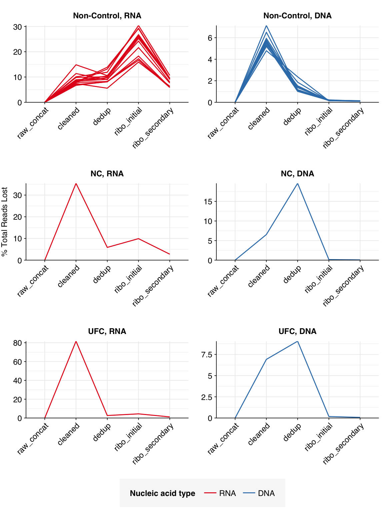
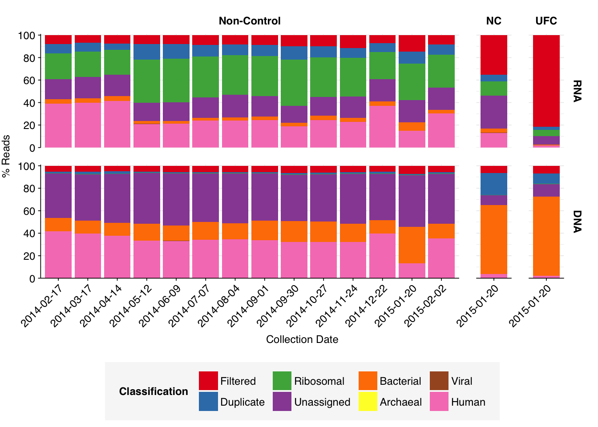
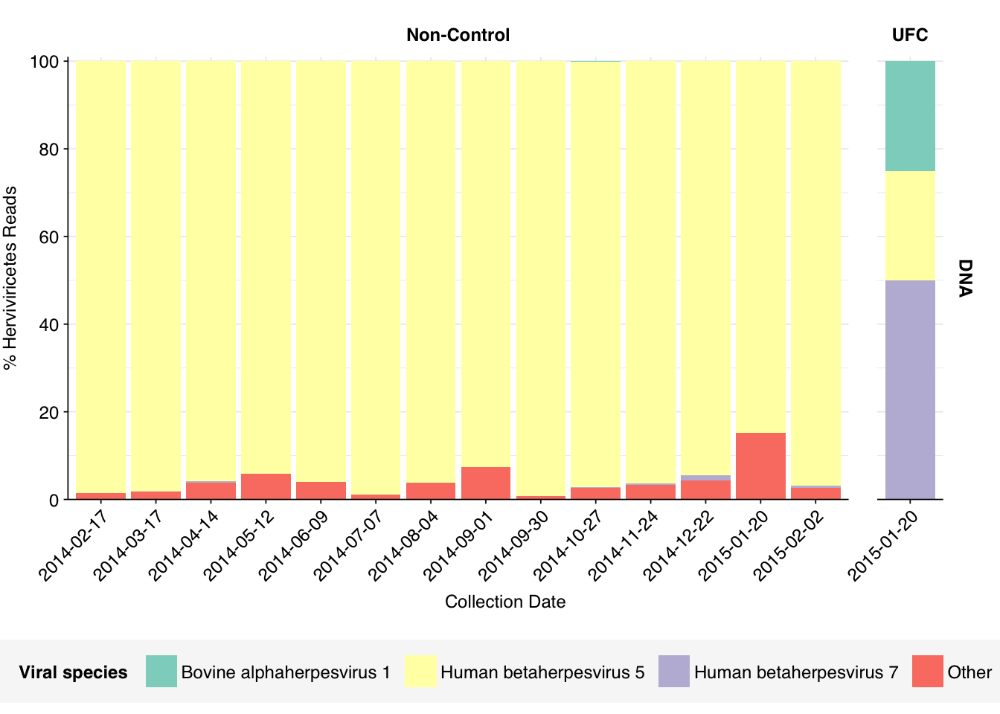
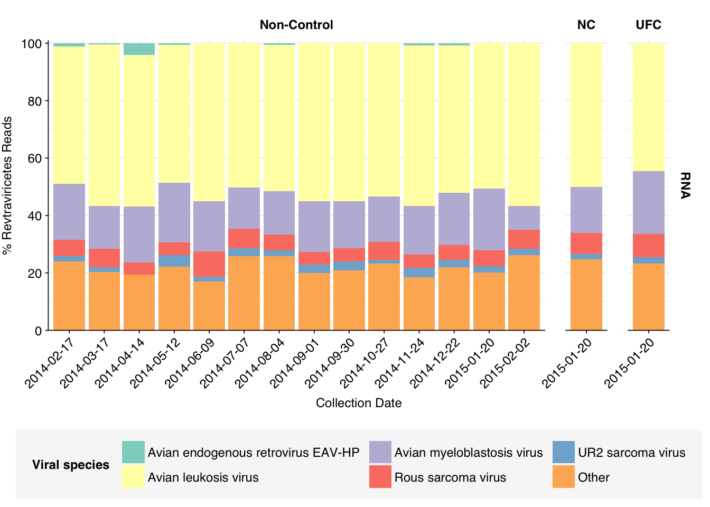
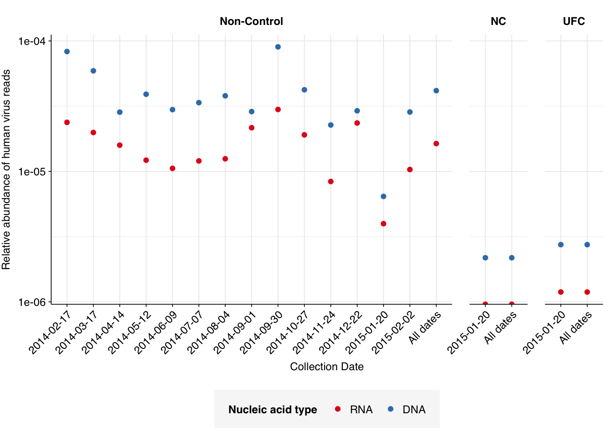
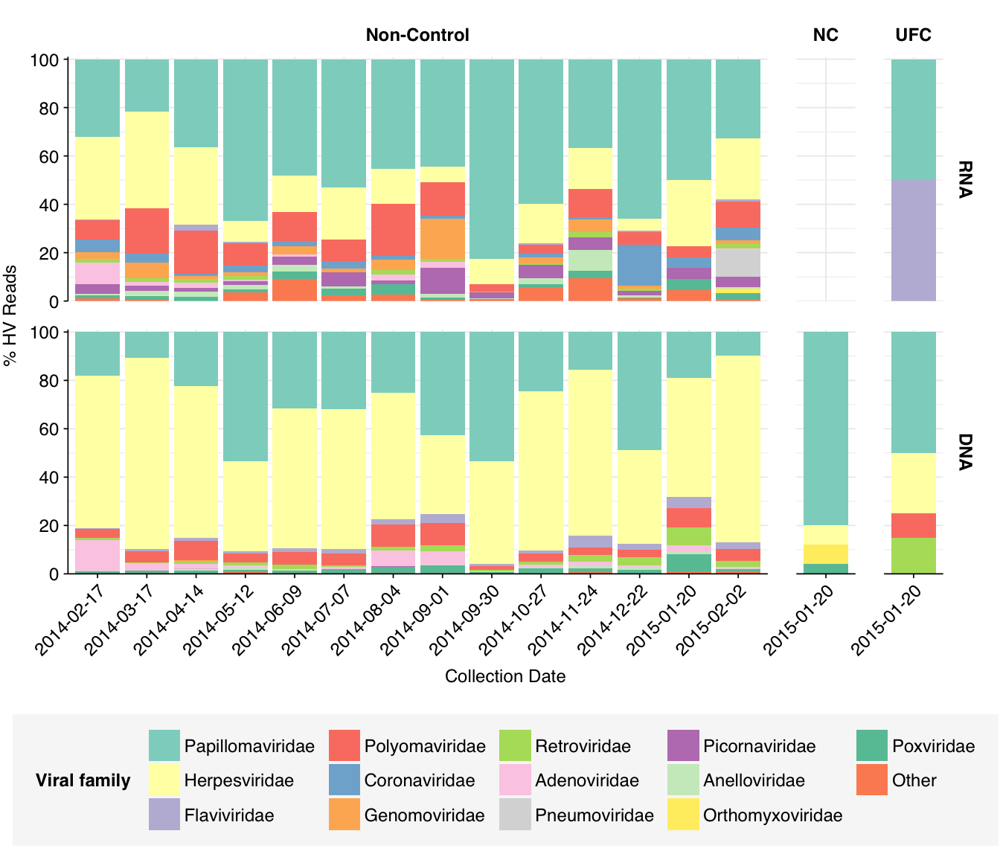
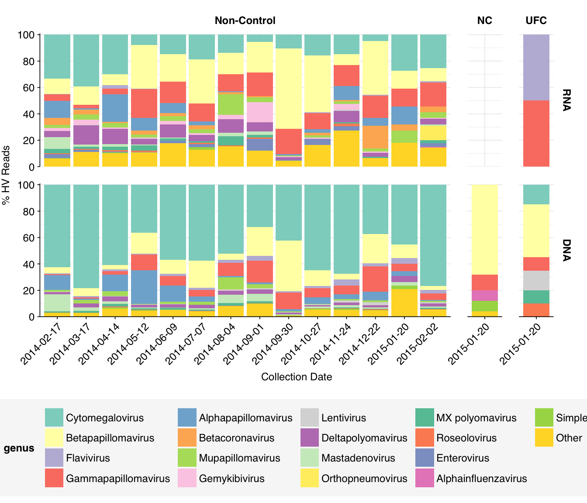
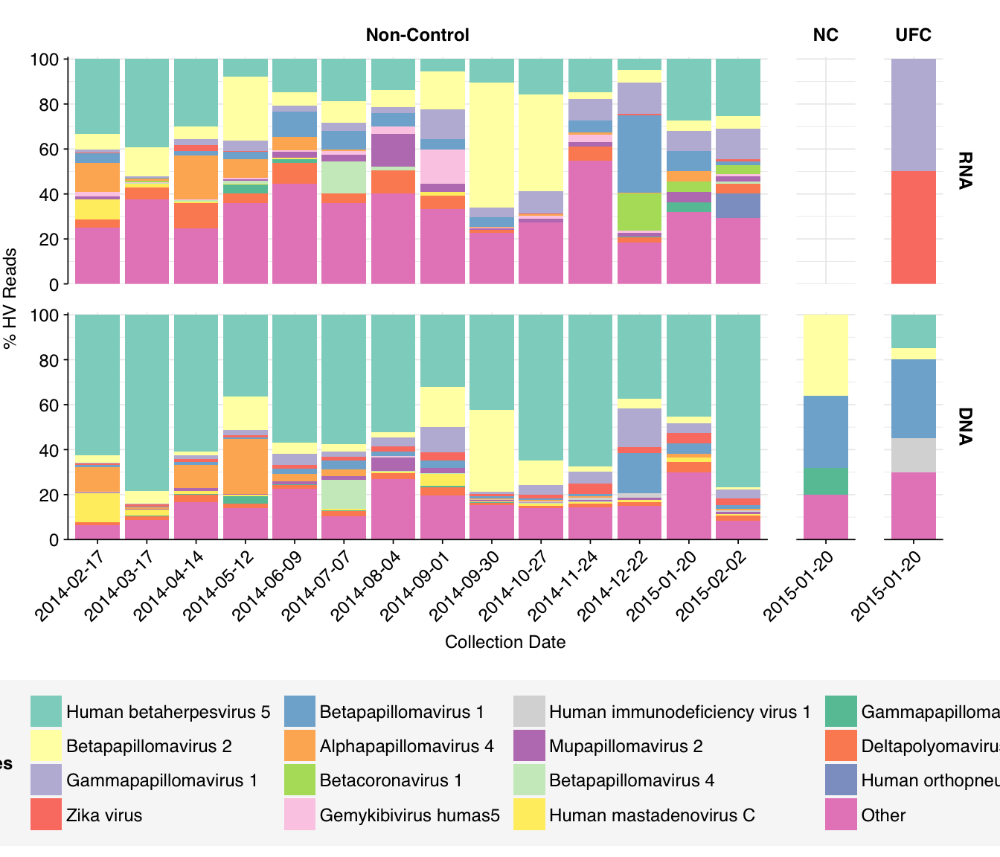
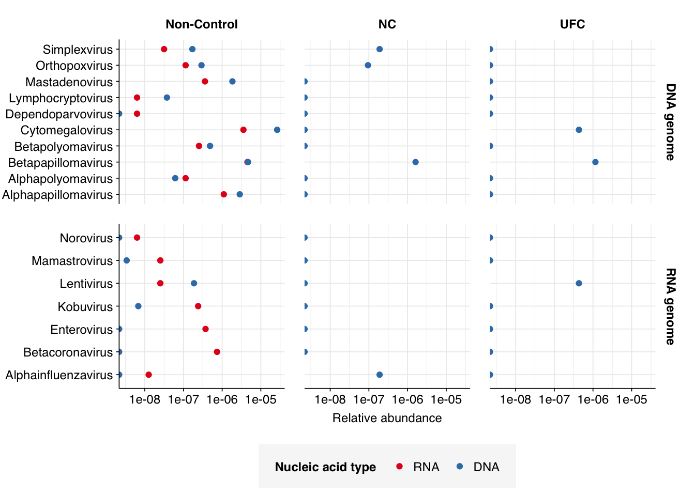

Taking a break from working on P2RA datasets, we’re also working on a review of air sampling for viral pathogen detection. For that study, we’re collecting and analyzing air MGS data that could give us a high-level idea of the likely viral composition of such samples.
The first dataset I’m looking at for this work is Prussin et al. (2019), a study of HVAC filter samples in a Virginia daycare center between 2014 and 2015. Samples were eluted from MERV-14 air filters collected every two weeks, with pairs of successive samples combined into four-week sampling periods. Like Brumfield et al, this study conducted both RNA and DNA sequencing; all samples were sequenced on an Illumina NextSeq500 with 2x150bp reads.
The raw data
The Prussin dataset comprised sequencing data from 14 timepoints spread across the year, from 20th January 2014 to 2nd February 2015. Each sample represents a four-week sampling period. In addition to the 14 on-site samples, there were also two control samples, a negative control (NC) and an “unexposed filter” control (UFC), which were collected on December 23rd 2014.
The 14 positive samples from the dataset yielded 5M-20M (mean 11.3M) RNA-sequencing reads and 10M-42M (mean 21.0M) DNA-sequencing reads per sample, for a total of 159M RNA read pairs and 294M DNA read pairs (46.3 and 87.0 gigabases of sequence, respectively). Controls contributed an additional 1M RNA read pairs and 17.5M DNA read pairs.
In positive samples, read qualities were mostly high but tailed off slightly at the 3’ end in some samples, suggesting the need for trimming. Adapter levels were high. Inferred duplication levels were low (2-4%) in DNA reads and moderate (21-44%) in RNA reads. Control sample reads were more problematic, with higher duplication and adapter levels and lower quality.
The average fraction of reads lost at each stage in the preprocessing pipeline is shown in the following table. For positive samples, on average, cleaning and deduplication removed about 19% of total read pairs from RNA libraries and about 7% from DNA libraries. Subsequent ribodepletion removed a further ~32% of total read pairs on average from RNA libraries but <0.5% of total read pairs from DNA libraries.
Control samples, meanwhile, lost an average of 63% of RNA read pairs and 21% of DNA read pairs during cleaning and deduplication, consistent with the lower qualities observed above. Subsequent ribodepletion removed an additional 9% of total RNA read pairs and 0.3% of total DNA read pairs.
# Plot relative read losses during preprocessingg_reads_rel<-ggplot(n_reads_rel, aes(x=stage, color=na_type, group=sample))+geom_line(aes(y=p_reads_lost_abs_marginal))+scale_y_continuous("% Total Reads Lost", expand=c(0,0), labels =function(x)x*100)+scale_color_na()+facet_wrap(ctrl~na_type, scales="free", ncol=2, labeller =label_wrap_gen(multi_line=FALSE))+theme_kitg_reads_rel

In both positive and control samples, data cleaning with FASTP was very successful at removing adapters, with very few adapter sequences found by FASTQC at any stage after the raw data. FASTP was also successful at improving read quality.
According to FASTQC, deduplication was moderately effective at reducing measured duplicate levels in on-site samples, with FASTQC-measured levels falling from an average of 34% to 23% for RNA reads and from 2.7% to 2.2% for DNA reads.
As before, to assess the high-level composition of the reads, I ran the ribodepleted files through Kraken (using the Standard 16 database) and summarized the results with Bracken. Combining these results with the read counts above gives us a breakdown of the inferred composition of the samples:
# Prepare plotting templatesg_comp_base<-ggplot(mapping=aes(x=date, y=p_reads, fill=classification))+scale_x_discrete(name="Collection Date")+facet_grid(na_type~ctrl, scales ="free", space ="free_x")+theme_rotatescale_y_pc_reads<-purrr::partial(scale_y_continuous, name ="% Reads", expand =c(0,0), labels =function(y)y*100)# Plot overall compositiong_comp<-g_comp_base+geom_col(data =read_comp_long, position ="stack")+scale_y_pc_reads(limits =c(0,1.01), breaks =seq(0,1,0.2))+scale_fill_brewer(palette ="Set1", name ="Classification")g_comp

Code
# Plot composition of minor componentsread_comp_minor<-read_comp_long%>%filter(classification%in%c("Archaeal", "Viral", "Other"))palette_minor<-brewer.pal(9, "Set1")[c(6,7,9)]g_comp_minor<-g_comp_base+geom_col(data=read_comp_minor, position ="stack")+scale_y_pc_reads()+scale_fill_manual(values=palette_minor, name ="Classification")g_comp_minor
What we see is a very different picture from the wastewater samples I’ve been analyzing so far. Most notably, the fraction of (non-ribosomal) human reads is much higher. Even the 2015-01-20 samples, which were taken when the daycare center was closed for the winter holidays, showed human read fractions (for both nucleic-acid types) of >12%; non-control samples as a whole averaged 27% for RNA reads and 34% for DNA reads. Compare Brumfield (average 0.08% for RNA and 0.02% for DNA), Yang (mean 0.05% for RNA) or even Rothman (mean 1.8% for non-panel-enriched RNA samples).
Conversely, total viral reads are very low: mean 0.033% for RNA reads and 0.019% for DNA reads. Wastewater RNA datasets have typically had much higher total viruses: mean 0.5% for Brumfield, about the same for Crits-Christoph, 5.5% for Yang, 4.5% for Rothman. Brumfield’s DNA data contained substantially fewer viruses than their RNA data, but still more than Prussin: about 0.08% on average.
Looking at viral families…was less informative than usual, especially for DNA reads. It turns out that these samples contain a lot of viral reads that Kraken2 was only able to classify to the class level. In DNA reads, samples were dominated by Caudoviricetes phages, though Herviviricetes (which includes herpesviruses) and Naldaviricetes (a class of arthropod-infecting viruses) also put in a respectable showing. In RNA reads, Caudoviricetes was again a major presence, but Alsuviricetes (a family of primarily plant pathogens) was often as or more prevalent, and Revtraviricetes (a class that includes Hepatitis B virus and retroviruses) was also significant.
Of these, the most interesting are the strong presence of Herviviricetes in the DNA reads and Revtraviricetes in the RNA reads, as both of these are families that contain important human pathogens.
Digging into the former, it turns out these reads are composed almost exclusively of Herpesviridae at the family level. Within non-control samples, these arise overwhelmingly from Cytomegalovirus. Digging in at the species level, these in turn are primarily attributed to a single CMV, Human betaherpesvirus 5, a.k.a. human cytomegalovirus (HCMV). I was excited to see this: this is the first time a single human pathogen, or even all human pathogens combined, have constituted a significant fraction of all viral reads in a sample I’ve analyzed with this pipeline.
Code
# Get all read counts in classhervi_taxid<-2731363hervi_desc_taxids_old<-hervi_taxidhervi_desc_taxids_new<-unique(c(hervi_desc_taxids_old, viral_taxa%>%filter(parent_taxid%in%hervi_desc_taxids_old)%>%pull(taxid)))while(length(hervi_desc_taxids_new)>length(hervi_desc_taxids_old)){hervi_desc_taxids_old<-hervi_desc_taxids_newhervi_desc_taxids_new<-unique(c(hervi_desc_taxids_old, viral_taxa%>%filter(parent_taxid%in%hervi_desc_taxids_old)%>%pull(taxid)))}hervi_counts<-kraken_reports_viral_cleaned%>%filter(taxid%in%hervi_desc_taxids_new)%>%mutate(p_reads_hervi =n_reads_clade/n_reads_clade[1])# Get genus compositionhervi_genera<-hervi_counts%>%filter(rank=="S", na_type=="DNA")hervi_genera_major_tab<-hervi_genera%>%group_by(name, taxid)%>%summarize(p_reads_hervi_max =max(p_reads_hervi), .groups="drop")%>%filter(p_reads_hervi_max>=0.04)hervi_genera_major_list<-hervi_genera_major_tab%>%pull(name)hervi_genera_major<-hervi_genera%>%filter(name%in%hervi_genera_major_list)%>%select(name, taxid, sample, na_type, ctrl, date, p_reads_hervi)hervi_genera_minor<-hervi_genera_major%>%group_by(sample, na_type, ctrl, date)%>%summarize(p_reads_hervi_major =sum(p_reads_hervi), .groups ="drop")%>%mutate(name ="Other", taxid=NA, p_reads_hervi =1-p_reads_hervi_major)%>%select(name, taxid, sample, na_type, ctrl, date, p_reads_hervi)hervi_genera_display<-bind_rows(hervi_genera_major, hervi_genera_minor)%>%arrange(desc(p_reads_hervi))%>%mutate(name =factor(name, levels=c(hervi_genera_major_list, "Other")))%>%rename(p_reads =p_reads_hervi, classification=name)# Plotg_hervi_genera<-g_comp_base+geom_col(data=hervi_genera_display, position ="stack")+scale_y_continuous(name="% Herviviricetes Reads", limits=c(0,1.01), breaks =seq(0,1,0.2), expand=c(0,0), labels =function(y)y*100)+scale_fill_manual(values=palette_viral, name ="Viral species")g_hervi_genera

Revtraviricetes reads are similarly dominated by a single viral genus, Alpharetrovirus. Digging in at the species level, we see contributions from a variety of avian oncoviruses. To my (admittedly non-expert) knowledge, none of these infect humans, and I think they are probably primarily arising from local birds (or possibly rats).
Code
# Get all read counts in classrevtra_taxid<-2732514revtra_desc_taxids_old<-revtra_taxidrevtra_desc_taxids_new<-unique(c(revtra_desc_taxids_old, viral_taxa%>%filter(parent_taxid%in%revtra_desc_taxids_old)%>%pull(taxid)))while(length(revtra_desc_taxids_new)>length(revtra_desc_taxids_old)){revtra_desc_taxids_old<-revtra_desc_taxids_newrevtra_desc_taxids_new<-unique(c(revtra_desc_taxids_old, viral_taxa%>%filter(parent_taxid%in%revtra_desc_taxids_old)%>%pull(taxid)))}revtra_counts<-kraken_reports_viral_cleaned%>%filter(taxid%in%revtra_desc_taxids_new)%>%mutate(p_reads_revtra =n_reads_clade/n_reads_clade[1])# Get genus compositionrevtra_species<-revtra_counts%>%filter(rank=="S", na_type=="RNA")revtra_species_major_tab<-revtra_species%>%group_by(name, taxid)%>%summarize(p_reads_revtra_max =max(p_reads_revtra), .groups="drop")%>%filter(p_reads_revtra_max>=0.04)revtra_species_major_list<-revtra_species_major_tab%>%pull(name)revtra_species_major<-revtra_species%>%filter(name%in%revtra_species_major_list)%>%select(name, taxid, sample, na_type, ctrl, date, p_reads_revtra)revtra_species_minor<-revtra_species_major%>%group_by(sample, na_type, ctrl, date)%>%summarize(p_reads_revtra_major =sum(p_reads_revtra), .groups ="drop")%>%mutate(name ="Other", taxid=NA, p_reads_revtra =1-p_reads_revtra_major)%>%select(name, taxid, sample, na_type, ctrl, date, p_reads_revtra)revtra_species_display<-bind_rows(revtra_species_major, revtra_species_minor)%>%arrange(desc(p_reads_revtra))%>%mutate(name =factor(name, levels=c(revtra_species_major_list, "Other")))%>%rename(p_reads =p_reads_revtra, classification=name)# Plotg_revtra_species<-g_comp_base+geom_col(data=revtra_species_display, position ="stack")+scale_y_continuous(name="% Revtraviricetes Reads", limits=c(0,1.01), breaks =seq(0,1,0.2), expand=c(0,0), labels =function(y)y*100)+scale_fill_manual(values=palette_viral, name ="Viral species")g_revtra_species

Human-infecting virus reads: validation
Next, I investigated the human-infecting virus read content of these unenriched samples. Using the same workflow I used for Brumfield et al, I identified 2811 RNA read pairs and 12792 DNA read pairs as putatively human viral: 0.003% and 0.005% of surviving reads, respectively.
These results look good on visual inspection, and indeed precision and sensitivity are both very high. For a disjunctive score threshold of 20, my updated workflow achieves an F1 score of 96.7% for RNA sequences and 98.2% for DNA sequences.
Looking into the composition of different read groups, nothing stands out except the predominance of HCMV (human betaherpesvirus 5), which is consistent with the Kraken results above and borne out by the BLASTN alignments:
# Get raw read countsread_counts_raw<-basic_stats_raw%>%select(sample, date, na_type, ctrl, n_reads_raw =n_read_pairs)# Get HV read countsmrg_hv<-mrg%>%mutate(hv_status =assigned_hv|hit_hv|adj_score_max>=20)read_counts_hv<-mrg_hv%>%filter(hv_status)%>%group_by(sample)%>%count(name="n_reads_hv")read_counts<-read_counts_raw%>%left_join(read_counts_hv, by="sample")%>%mutate(n_reads_hv =replace_na(n_reads_hv, 0))# Aggregateread_counts_total<-read_counts%>%group_by(na_type, ctrl)%>%summarize(n_reads_raw =sum(n_reads_raw), n_reads_hv =sum(n_reads_hv), .groups="drop")%>%mutate(sample="All samples", date ="All dates")read_counts_agg<-read_counts%>%arrange(date)%>%arrange(sample)%>%bind_rows(read_counts_total)%>%mutate(sample =fct_inorder(sample), p_reads_hv =n_reads_hv/n_reads_raw)
In non-control samples, applying a disjunctive cutoff at S=20 identifies 2591 RNA reads and 12236 DNA reads as human-viral. This gives an overall relative HV abundance of \(1.63 \times 10^{-5}\) for RNA reads and \(4.16 \times 10^{-5}\) for DNA reads. Reassuringly, relative abundances in control samples are at least 10x lower. We also see a sharp drop in relative abundance for both nucleic-acid types for the period when the daycare was closed (2015-01-20):
Code
# Visualizeg_phv_agg<-ggplot(read_counts_agg, aes(x=date, color=na_type))+geom_point(aes(y=p_reads_hv))+scale_y_log10("Relative abundance of human virus reads")+scale_x_discrete(name="Collection Date")+facet_grid(.~ctrl, scales ="free", space ="free_x")+scale_color_na()+theme_rotateg_phv_agg

These overall RA values are similar to those we’ve seen previously for non-panel-enriched wastewater RNA data. That said, it’s notable that the DNA read RA seen here is much higher than that seen in the only DNA wastewater dataset I’ve analyzed so far (Brumfield):
At the family level, we see that Papillomaviridae, Herpesviridae, and Polyomaviridae are the most abundant families in both DNA and RNA reads, with Adenoviridae and (in RNA reads) Picornaviridae also making a respectable showing. The Herpesviridae reads are, predictably, overwhelmingly from HCMV, while the Papillomaviridae and Polyomaviridae reads are split up among a larger number of related viruses:
Code
# Get viral taxon names for putative HV readsviral_taxa$name[viral_taxa$taxid==249588]<-"Mamastrovirus"viral_taxa$name[viral_taxa$taxid==194960]<-"Kobuvirus"viral_taxa$name[viral_taxa$taxid==688449]<-"Salivirus"viral_taxa$name[viral_taxa$taxid==585893]<-"Picobirnaviridae"viral_taxa$name[viral_taxa$taxid==333922]<-"Betapapillomavirus"viral_taxa$name[viral_taxa$taxid==334207]<-"Betapapillomavirus 3"viral_taxa$name[viral_taxa$taxid==369960]<-"Porcine type-C oncovirus"viral_taxa$name[viral_taxa$taxid==333924]<-"Betapapillomavirus 2"viral_taxa$name[viral_taxa$taxid==687329]<-"Anelloviridae"viral_taxa$name[viral_taxa$taxid==325455]<-"Gammapapillomavirus"viral_taxa$name[viral_taxa$taxid==333750]<-"Alphapapillomavirus"viral_taxa$name[viral_taxa$taxid==694002]<-"Betacoronavirus"viral_taxa$name[viral_taxa$taxid==334202]<-"Mupapillomavirus"viral_taxa$name[viral_taxa$taxid==197911]<-"Alphainfluenzavirus"viral_taxa$name[viral_taxa$taxid==186938]<-"Respirovirus"viral_taxa$name[viral_taxa$taxid==333926]<-"Gammapapillomavirus 1"viral_taxa$name[viral_taxa$taxid==337051]<-"Betapapillomavirus 1"viral_taxa$name[viral_taxa$taxid==337043]<-"Alphapapillomavirus 4"viral_taxa$name[viral_taxa$taxid==694003]<-"Betacoronavirus 1"viral_taxa$name[viral_taxa$taxid==334204]<-"Mupapillomavirus 2"viral_taxa$name[viral_taxa$taxid==334208]<-"Betapapillomavirus 4"viral_taxa$name[viral_taxa$taxid==334208]<-"Betapapillomavirus 4"viral_taxa$name[viral_taxa$taxid==334208]<-"Betapapillomavirus 4"viral_taxa$name[viral_taxa$taxid==334208]<-"Betapapillomavirus 4"mrg_hv_named<-mrg_hv%>%left_join(viral_taxa, by="taxid")# Discover viral species & genera for HV readsraise_rank<-function(read_db, taxid_db, out_rank="species", verbose=FALSE){# Get higher ranks than search rankranks<-c("subspecies", "species", "subgenus", "genus", "subfamily", "family", "suborder", "order", "class", "subphylum", "phylum", "kingdom", "superkingdom")rank_match<-which.max(ranks==out_rank)high_ranks<-ranks[rank_match:length(ranks)]# Merge read DB and taxid DBreads<-read_db%>%select(-parent_taxid, -rank, -name)%>%left_join(taxid_db, by="taxid")# Extract sequences that are already at appropriate rankreads_rank<-filter(reads, rank==out_rank)# Drop sequences at a higher rank and return unclassified sequencesreads_norank<-reads%>%filter(rank!=out_rank, !rank%in%high_ranks, !is.na(taxid))while(nrow(reads_norank)>0){# As long as there are unclassified sequences...# Promote read taxids and re-merge with taxid DB, then re-classify and filterreads_remaining<-reads_norank%>%mutate(taxid =parent_taxid)%>%select(-parent_taxid, -rank, -name)%>%left_join(taxid_db, by="taxid")reads_rank<-reads_remaining%>%filter(rank==out_rank)%>%bind_rows(reads_rank)reads_norank<-reads_remaining%>%filter(rank!=out_rank, !rank%in%high_ranks, !is.na(taxid))}# Finally, extract and append reads that were excluded during the processreads_dropped<-reads%>%filter(!seq_id%in%reads_rank$seq_id)reads_out<-reads_rank%>%bind_rows(reads_dropped)%>%select(-parent_taxid, -rank, -name)%>%left_join(taxid_db, by="taxid")return(reads_out)}hv_reads_species<-raise_rank(mrg_hv_named, viral_taxa, "species")hv_reads_genus<-raise_rank(mrg_hv_named, viral_taxa, "genus")hv_reads_family<-raise_rank(mrg_hv_named, viral_taxa, "family")
Code
threshold_major_family<-0.06# Count reads for each human-viral familyhv_family_counts<-hv_reads_family%>%group_by(sample, date, ctrl, na_type, name, taxid)%>%count(name ="n_reads_hv")%>%group_by(sample, date, ctrl, na_type)%>%mutate(p_reads_hv =n_reads_hv/sum(n_reads_hv))# Identify high-ranking families and group othershv_family_major_tab<-hv_family_counts%>%group_by(name)%>%filter(p_reads_hv==max(p_reads_hv))%>%filter(row_number()==1)%>%arrange(desc(p_reads_hv))%>%filter(p_reads_hv>threshold_major_family)hv_family_counts_major<-hv_family_counts%>%mutate(name_display =ifelse(name%in%hv_family_major_tab$name, name, "Other"))%>%group_by(sample, date, ctrl, na_type, name_display)%>%summarize(n_reads_hv =sum(n_reads_hv), p_reads_hv =sum(p_reads_hv), .groups="drop")%>%mutate(name_display =factor(name_display, levels =c(hv_family_major_tab$name, "Other")))hv_family_counts_display<-hv_family_counts_major%>%rename(p_reads =p_reads_hv, classification =name_display)# Plotg_hv_family<-g_comp_base+geom_col(data=hv_family_counts_display, position ="stack")+scale_y_continuous(name="% HV Reads", limits=c(0,1.01), breaks =seq(0,1,0.2), expand=c(0,0), labels =function(y)y*100)+scale_fill_manual(values=palette_viral, name ="Viral family")g_hv_family

Code
threshold_major_genus<-0.06# Count reads for each human-viral genushv_genus_counts<-hv_reads_genus%>%group_by(sample, date, ctrl, na_type, name, taxid)%>%count(name ="n_reads_hv")%>%group_by(sample, date, ctrl, na_type)%>%mutate(p_reads_hv =n_reads_hv/sum(n_reads_hv))# Identify high-ranking families and group othershv_genus_major_tab<-hv_genus_counts%>%group_by(name)%>%filter(p_reads_hv==max(p_reads_hv))%>%filter(row_number()==1)%>%arrange(desc(p_reads_hv))%>%filter(p_reads_hv>threshold_major_genus)hv_genus_counts_major<-hv_genus_counts%>%mutate(name_display =ifelse(name%in%hv_genus_major_tab$name, name, "Other"))%>%group_by(sample, date, ctrl, na_type, name_display)%>%summarize(n_reads_hv =sum(n_reads_hv), p_reads_hv =sum(p_reads_hv), .groups="drop")%>%mutate(name_display =factor(name_display, levels =c(hv_genus_major_tab$name, "Other")))hv_genus_counts_display<-hv_genus_counts_major%>%rename(p_reads =p_reads_hv, classification =name_display)# Plotg_hv_genus<-g_comp_base+geom_col(data=hv_genus_counts_display, position ="stack")+scale_y_continuous(name="% HV Reads", limits=c(0,1.01), breaks =seq(0,1,0.2), expand=c(0,0), labels =function(y)y*100)+scale_fill_manual(values=palette_viral, name ="Viral genus")g_hv_genus

Code
threshold_major_species<-0.10# Count reads for each human-viral specieshv_species_counts<-hv_reads_species%>%group_by(sample, date, ctrl, na_type, name, taxid)%>%count(name ="n_reads_hv")%>%group_by(sample, date, ctrl, na_type)%>%mutate(p_reads_hv =n_reads_hv/sum(n_reads_hv))# Identify high-ranking families and group othershv_species_major_tab<-hv_species_counts%>%group_by(name)%>%filter(p_reads_hv==max(p_reads_hv))%>%filter(row_number()==1)%>%arrange(desc(p_reads_hv))%>%filter(p_reads_hv>threshold_major_species)hv_species_counts_major<-hv_species_counts%>%mutate(name_display =ifelse(name%in%hv_species_major_tab$name, name, "Other"))%>%group_by(sample, date, ctrl, na_type, name_display)%>%summarize(n_reads_hv =sum(n_reads_hv), p_reads_hv =sum(p_reads_hv), .groups="drop")%>%mutate(name_display =factor(name_display, levels =c(hv_species_major_tab$name, "Other")))hv_species_counts_display<-hv_species_counts_major%>%rename(p_reads =p_reads_hv, classification =name_display)# Plotg_hv_species<-g_comp_base+geom_col(data=hv_species_counts_display, position ="stack")+scale_y_continuous(name="% HV Reads", limits=c(0,1.01), breaks =seq(0,1,0.2), expand=c(0,0), labels =function(y)y*100)+scale_fill_manual(values=palette_viral, name ="Viral species")g_hv_species

Compared to the previous datasets I’ve analyzed, the most notable difference is the absence of enteric viruses: Norovirus, Rotavirus, and Enterovirus are all absent from the list of abundant human-viral taxa, as are ~all other gastrointestinal pathogens.
Finally, here are the overall relative abundances of a set of specific viral genera picked out manually on the basis of scientific or medical interest. In the future, I’ll quantify the RA of these genera across all datasets analyzed with this pipeline to date, which should give us a better sense of how these data compare to others’ under this pipeline.
Warning: Transformation introduced infinite values in continuous x-axis

Conclusion
This is the first air-sampling dataset I’ve analyzed using this pipeline, and it was interesting to see the differences from the wastewater datasets I’ve been analyzing so far. Among the more striking differences were:
A much higher total fraction of human reads;
A lower total fraction of viral reads;
Near-total absence of enteric viruses and Tobamovirus;
Much higher relative abundance of herpesviruses, particularly HCMV, and papillomaviruses among human-infecting virus reads.
Conversely, one thing that was not notably different, at least in RNA viruses, was the total relative abundance of human-infecting viruses as a whole. Given the lower fraction of reads made up of all viruses, this means that the fraction of total viruses arising from human-infecting viruses is much higher here than we’ve historically seen with wastewater data. In particular, HCMV represents a nontrivial fraction of total viruses for many DNA libraries, the first time I’ve seen a human pathogen show up significantly in the total virus composition data.
Going forward, I have two more air sampling datasets to analyze, Rosario et al. 2018 and Leung et al. 2021. It will be interesting to see whether the findings from this dataset generalize to other air sampling contexts.
Addendum: Checking HIV
Jeff from my team asks:
Do you think the HIV reads are real? The v1 pipeline shows 39 HIV reads in that dataset
My pipeline finds 62 Lentivirus reads for this dataset, 34 from HIV-1 and 28 from HIV-2. Oddly, and perhaps suspiciously, these nearly all come from DNA libraries:
The four RNA reads seem very likely not to be true HIV reads, since they map primarily to humans and other primates. The 58 DNA reads are more ambiguous; they do map to HIV, but also to a range of synthetic cloning vectors. On the other hand, I just now took a random slice from the HIV-1 genome and BLASTed it online, and it also mapped to cloning vectors; it’s just the case that a lot of people use lentiviruses as the backbones for their cloning vectors.
This makes disambiguating whether or not these reads are “real” a bit tricky. The fact that they’re DNA rather than RNA makes me suspicious, as does the fact that so few of the reads apparently come from regions of the HIV genome not included in cloning vectors. On balance, I think these are probably not real HIV reads! But it’s hard to be highly confident one way or the other.
If we decide to treat these reads as artifacts arising from contamination with cloning vectors, what do we do about it? Just removing any read that matches a lentiviral cloning vector seems like a risky strategy when these vectors share so much sequence with real viruses. For now, I’ll leave my contamination database as it is and continue checking HIV reads manually. But I’ll need to develop a better solution to this sooner or later.
Source Code
---title: "Workflow analysis of Prussin et al. (2019)"subtitle: "Air filters from a daycare in Virginia."author: "Will Bradshaw"date: 2024-04-12format: html: code-fold: true code-tools: true code-link: true df-print: pagededitor: visualtitle-block-banner: black---```{r}#| label: load-packages#| include: falselibrary(tidyverse)library(cowplot)library(patchwork)library(fastqcr)library(RColorBrewer)source("../scripts/aux_plot-theme.R")theme_base <- theme_base +theme(aspect.ratio =NULL)theme_rotate <- theme_base +theme(axis.text.x =element_text(hjust =1, angle =45),)theme_kit <- theme_rotate +theme(axis.title.x =element_blank(),)tnl <-theme(legend.position ="none")```Taking a break from working on [P2RA datasets](https://doi.org/10.1101/2023.12.22.23300450), we're also working on a review of air sampling for viral pathogen detection. For that study, we're collecting and analyzing air MGS data that could give us a high-level idea of the likely viral composition of such samples.The first dataset I'm looking at for this work is [Prussin et al. (2019)](https://doi.org/10.1186/s40168-019-0672-z), a study of HVAC filter samples in a Virginia daycare center between 2014 and 2015. Samples were eluted from MERV-14 air filters collected every two weeks, with pairs of successive samples combined into four-week sampling periods. Like Brumfield et al, this study conducted both RNA and DNA sequencing; all samples were sequenced on an Illumina NextSeq500 with 2x150bp reads.# The raw dataThe Prussin dataset comprised sequencing data from 14 timepoints spread across the year, from 20th January 2014 to 2nd February 2015. Each sample represents a four-week sampling period. In addition to the 14 on-site samples, there were also two control samples, a negative control (NC) and an "unexposed filter" control (UFC), which were collected on December 23rd 2014.```{r}#| warning: false#| label: read-qc-data# Data input pathsdata_dir <-"../data/2024-04-11_prussin/"libraries_path <-file.path(data_dir, "sample-metadata.csv")basic_stats_path <-file.path(data_dir, "qc_basic_stats.tsv")adapter_stats_path <-file.path(data_dir, "qc_adapter_stats.tsv")quality_base_stats_path <-file.path(data_dir, "qc_quality_base_stats.tsv")quality_seq_stats_path <-file.path(data_dir, "qc_quality_sequence_stats.tsv")# Import libraries and extract metadata from sample nameslibraries_raw <-read_csv(libraries_path, show_col_types =FALSE)libraries <- libraries_raw %>%arrange(desc(na_type)) %>%mutate(na_type =fct_inorder(na_type)) %>%arrange(date) %>%rename(start_date = date) %>%mutate(end_date = start_date +28) %>%mutate(date =fct_inorder(as.character(end_date)),ctrl =ifelse(grepl("Negative_Control", sample_alias), "NC",ifelse(grepl("Unexposed_Filter", sample_alias),"UFC", "Non-Control")),ctrl =factor(ctrl, levels =c("Non-Control","NC","UFC")),open = (season !="Closed") & (ctrl =="On-Site"))# Import QC datastages <-c("raw_concat", "cleaned", "dedup", "ribo_initial", "ribo_secondary")basic_stats <-read_tsv(basic_stats_path, show_col_types =FALSE) %>%inner_join(libraries, by="sample") %>%mutate(stage =factor(stage, levels = stages),sample =fct_inorder(sample))adapter_stats <-read_tsv(adapter_stats_path, show_col_types =FALSE) %>%mutate(sample =sub("_2$", "", sample)) %>%inner_join(libraries, by="sample") %>%mutate(stage =factor(stage, levels = stages),read_pair =fct_inorder(as.character(read_pair)))quality_base_stats <-read_tsv(quality_base_stats_path, show_col_types =FALSE) %>%inner_join(libraries, by="sample") %>%mutate(stage =factor(stage, levels = stages),read_pair =fct_inorder(as.character(read_pair)))quality_seq_stats <-read_tsv(quality_seq_stats_path, show_col_types =FALSE) %>%inner_join(libraries, by="sample") %>%mutate(stage =factor(stage, levels = stages),read_pair =fct_inorder(as.character(read_pair)))# Filter to raw databasic_stats_raw <- basic_stats %>%filter(stage =="raw_concat")adapter_stats_raw <- adapter_stats %>%filter(stage =="raw_concat")quality_base_stats_raw <- quality_base_stats %>%filter(stage =="raw_concat")quality_seq_stats_raw <- quality_seq_stats %>%filter(stage =="raw_concat")# Get key values for readoutraw_read_counts <- basic_stats_raw %>%group_by(na_type, ctrl) %>%summarize(rmin =min(n_read_pairs), rmax=max(n_read_pairs),rmean=mean(n_read_pairs), .groups ="drop")raw_read_totals <- basic_stats_raw %>%group_by(na_type, ctrl) %>%summarize(n_read_pairs =sum(n_read_pairs), n_bases_approx =sum(n_bases_approx), .groups ="drop")raw_dup <- basic_stats_raw %>%group_by(na_type, ctrl) %>%summarize(dmin =min(percent_duplicates), dmax=max(percent_duplicates),dmean=mean(percent_duplicates), .groups ="drop")```The 14 positive samples from the dataset yielded 5M-20M (mean 11.3M) RNA-sequencing reads and 10M-42M (mean 21.0M) DNA-sequencing reads per sample, for a total of 159M RNA read pairs and 294M DNA read pairs (46.3 and 87.0 gigabases of sequence, respectively). Controls contributed an additional 1M RNA read pairs and 17.5M DNA read pairs.In positive samples, read qualities were mostly high but tailed off slightly at the 3' end in some samples, suggesting the need for trimming. Adapter levels were high. Inferred duplication levels were low (2-4%) in DNA reads and moderate (21-44%) in RNA reads. Control sample reads were more problematic, with higher duplication and adapter levels and lower quality.```{r}#| fig-width: 9#| warning: false#| label: plot-basic-stats# Prepare databasic_stats_raw_metrics <- basic_stats_raw %>%select(date, na_type, ctrl,`# Read pairs`= n_read_pairs,`Total base pairs\n(approx)`= n_bases_approx,`% Duplicates\n(FASTQC)`= percent_duplicates) %>%pivot_longer(-(date:ctrl), names_to ="metric", values_to ="value") %>%mutate(metric =fct_inorder(metric))# Set up plot templatesscale_fill_na <- purrr::partial(scale_fill_brewer, palette="Set1", name="Nucleic acid type")g_basic <-ggplot(basic_stats_raw_metrics, aes(x=date, y=value, fill=na_type)) +geom_col(position ="dodge") +scale_x_discrete(name="Collection Date") +scale_y_continuous(expand=c(0,0)) +expand_limits(y=c(0,100)) +scale_fill_na() +facet_grid(metric~ctrl, scales ="free", space="free_x", switch="y") + theme_rotate +theme(axis.title.y =element_blank(),strip.text.y =element_text(face="plain") )g_basic``````{r}#| label: plot-raw-quality# Set up plotting templatesscale_color_na <- purrr::partial(scale_color_brewer, palette="Set1",name="Nucleic acid type")g_qual_raw <-ggplot(mapping=aes(color=na_type, linetype=read_pair, group=interaction(sample,read_pair))) +scale_color_na() +scale_linetype_discrete(name ="Read Pair") +guides(color=guide_legend(nrow=2,byrow=TRUE),linetype =guide_legend(nrow=2,byrow=TRUE)) + theme_base# Visualize adaptersg_adapters_raw <- g_qual_raw +geom_line(aes(x=position, y=pc_adapters), data=adapter_stats_raw) +scale_y_continuous(name="% Adapters", limits=c(0,NA),breaks =seq(0,100,10), expand=c(0,0)) +scale_x_continuous(name="Position", limits=c(0,NA),breaks=seq(0,140,20), expand=c(0,0)) +facet_grid(ctrl~adapter)g_adapters_raw# Visualize qualityg_quality_base_raw <- g_qual_raw +geom_hline(yintercept=25, linetype="dashed", color="red") +geom_hline(yintercept=30, linetype="dashed", color="red") +geom_line(aes(x=position, y=mean_phred_score), data=quality_base_stats_raw) +scale_y_continuous(name="Mean Phred score", expand=c(0,0), limits=c(10,45)) +scale_x_continuous(name="Position", limits=c(0,NA),breaks=seq(0,140,20), expand=c(0,0)) +facet_grid(ctrl~.)g_quality_base_rawg_quality_seq_raw <- g_qual_raw +geom_vline(xintercept=25, linetype="dashed", color="red") +geom_vline(xintercept=30, linetype="dashed", color="red") +geom_line(aes(x=mean_phred_score, y=n_sequences), data=quality_seq_stats_raw) +scale_x_continuous(name="Mean Phred score", expand=c(0,0)) +scale_y_continuous(name="# Sequences", expand=c(0,0)) +facet_grid(ctrl~., scales ="free_y")g_quality_seq_raw```# PreprocessingThe average fraction of reads lost at each stage in the preprocessing pipeline is shown in the following table. For positive samples, on average, cleaning and deduplication removed about 19% of total read pairs from RNA libraries and about 7% from DNA libraries. Subsequent ribodepletion removed a further \~32% of total read pairs on average from RNA libraries but \<0.5% of total read pairs from DNA libraries.Control samples, meanwhile, lost an average of 63% of RNA read pairs and 21% of DNA read pairs during cleaning and deduplication, consistent with the lower qualities observed above. Subsequent ribodepletion removed an additional 9% of total RNA read pairs and 0.3% of total DNA read pairs.```{r}#| label: preproc-tablen_reads_rel <- basic_stats %>%select(sample, date, na_type, ctrl, stage, percent_duplicates, n_read_pairs) %>%group_by(sample, na_type) %>%arrange(sample, na_type, stage) %>%mutate(p_reads_retained =replace_na(n_read_pairs /lag(n_read_pairs), 0),p_reads_lost =1- p_reads_retained,p_reads_retained_abs = n_read_pairs / n_read_pairs[1],p_reads_lost_abs =1-p_reads_retained_abs,p_reads_lost_abs_marginal =replace_na(p_reads_lost_abs -lag(p_reads_lost_abs), 0))n_reads_rel_display <- n_reads_rel %>%rename(Stage=stage, `NA Type`=na_type, `Control?`=ctrl) %>%group_by(`Control?`, `NA Type`, Stage) %>%summarize(`% Total Reads Lost (Cumulative)`=paste0(round(min(p_reads_lost_abs*100),1), "-", round(max(p_reads_lost_abs*100),1), " (mean ", round(mean(p_reads_lost_abs*100),1), ")"),`% Total Reads Lost (Marginal)`=paste0(round(min(p_reads_lost_abs_marginal*100),1), "-", round(max(p_reads_lost_abs_marginal*100),1), " (mean ", round(mean(p_reads_lost_abs_marginal*100),1), ")"), .groups="drop") %>%filter(Stage !="raw_concat") %>%mutate(Stage = Stage %>% as.numeric %>%factor(labels=c("Trimming & filtering", "Deduplication", "Initial ribodepletion", "Secondary ribodepletion")))n_reads_rel_display``````{r}#| label: preproc-figures#| warning: false#| fig-height: 8#| fig-width: 6g_stage_trace <-ggplot(basic_stats, aes(x=stage, color=na_type, group=sample)) +scale_color_na() +facet_wrap(ctrl~na_type, scales="free", ncol=2,labeller =label_wrap_gen(multi_line=FALSE)) + theme_kit# Plot reads over preprocessingg_reads_stages <- g_stage_trace +geom_line(aes(y=n_read_pairs)) +scale_y_continuous("# Read pairs", expand=c(0,0), limits=c(0,NA))g_reads_stages# Plot relative read losses during preprocessingg_reads_rel <-ggplot(n_reads_rel, aes(x=stage, color=na_type, group=sample)) +geom_line(aes(y=p_reads_lost_abs_marginal)) +scale_y_continuous("% Total Reads Lost", expand=c(0,0), labels =function(x) x*100) +scale_color_na() +facet_wrap(ctrl~na_type, scales="free", ncol=2,labeller =label_wrap_gen(multi_line=FALSE)) + theme_kitg_reads_rel```In both positive and control samples, data cleaning with FASTP was very successful at removing adapters, with very few adapter sequences found by FASTQC at any stage after the raw data. FASTP was also successful at improving read quality.```{r}#| warning: false#| label: plot-quality#| fig-height: 7g_qual <-ggplot(mapping=aes(color=na_type, linetype=read_pair, group=interaction(sample,read_pair))) +scale_color_na() +scale_linetype_discrete(name ="Read Pair") +guides(color=guide_legend(nrow=2,byrow=TRUE),linetype =guide_legend(nrow=2,byrow=TRUE)) + theme_base# Visualize adaptersg_adapters <- g_qual +geom_line(aes(x=position, y=pc_adapters), data=adapter_stats) +scale_y_continuous(name="% Adapters", limits=c(0,20),breaks =seq(0,50,10), expand=c(0,0)) +scale_x_continuous(name="Position", limits=c(0,NA),breaks=seq(0,140,20), expand=c(0,0)) +facet_grid(stage~adapter)g_adapters# Visualize qualityg_quality_base <- g_qual +geom_hline(yintercept=25, linetype="dashed", color="red") +geom_hline(yintercept=30, linetype="dashed", color="red") +geom_line(aes(x=position, y=mean_phred_score), data=quality_base_stats) +scale_y_continuous(name="Mean Phred score", expand=c(0,0), limits=c(10,45)) +scale_x_continuous(name="Position", limits=c(0,NA),breaks=seq(0,140,20), expand=c(0,0)) +facet_grid(stage~.)g_quality_baseg_quality_seq <- g_qual +geom_vline(xintercept=25, linetype="dashed", color="red") +geom_vline(xintercept=30, linetype="dashed", color="red") +geom_line(aes(x=mean_phred_score, y=n_sequences), data=quality_seq_stats) +scale_x_continuous(name="Mean Phred score", expand=c(0,0)) +scale_y_continuous(name="# Sequences", expand=c(0,0)) +facet_grid(stage~.)g_quality_seq```According to FASTQC, deduplication was moderately effective at reducing measured duplicate levels in on-site samples, with FASTQC-measured levels falling from an average of 34% to 23% for RNA reads and from 2.7% to 2.2% for DNA reads.```{r}#| label: preproc-dedup#| fig-height: 8#| fig-width: 6stage_dup <- basic_stats %>%group_by(na_type, ctrl, stage) %>%summarize(dmin =min(percent_duplicates), dmax=max(percent_duplicates),dmean=mean(percent_duplicates), .groups ="drop")g_dup_stages <- g_stage_trace +geom_line(aes(y=percent_duplicates)) +scale_y_continuous("% Duplicates", limits=c(0,NA), expand=c(0,0))g_dup_stagesg_readlen_stages <- g_stage_trace +geom_line(aes(y=mean_seq_len)) +scale_y_continuous("Mean read length (nt)", expand=c(0,0), limits=c(0,NA))g_readlen_stages```# High-level compositionAs before, to assess the high-level composition of the reads, I ran the ribodepleted files through Kraken (using the Standard 16 database) and summarized the results with Bracken. Combining these results with the read counts above gives us a breakdown of the inferred composition of the samples:```{r}#| label: prepare-composition# Import Bracken databracken_path <-file.path(data_dir, "bracken_counts.tsv")bracken <-read_tsv(bracken_path, show_col_types =FALSE)total_assigned <- bracken %>%group_by(sample) %>%summarize(name ="Total",kraken_assigned_reads =sum(kraken_assigned_reads),added_reads =sum(added_reads),new_est_reads =sum(new_est_reads),fraction_total_reads =sum(fraction_total_reads))bracken_spread <- bracken %>%select(name, sample, new_est_reads) %>%mutate(name =tolower(name)) %>%pivot_wider(id_cols ="sample", names_from ="name", values_from ="new_est_reads")# Count readsread_counts_preproc <- basic_stats %>%select(sample, na_type, ctrl, date, stage, n_read_pairs) %>%pivot_wider(id_cols =c("sample", "na_type", "ctrl", "date"),names_from="stage", values_from="n_read_pairs")read_counts <- read_counts_preproc %>%inner_join(total_assigned %>%select(sample, new_est_reads), by ="sample") %>%rename(assigned = new_est_reads) %>%inner_join(bracken_spread, by="sample")# Assess compositionread_comp <-transmute(read_counts, sample=sample, na_type=na_type,ctrl = ctrl, date = date,n_filtered = raw_concat-cleaned,n_duplicate = cleaned-dedup,n_ribosomal = (dedup-ribo_initial) + (ribo_initial-ribo_secondary),n_unassigned = ribo_secondary-assigned,n_bacterial = bacteria,n_archaeal = archaea,n_viral = viruses,n_human = eukaryota)read_comp_long <-pivot_longer(read_comp, -(sample:date), names_to ="classification",names_prefix ="n_", values_to ="n_reads") %>%mutate(classification =fct_inorder(str_to_sentence(classification))) %>%group_by(sample) %>%mutate(p_reads = n_reads/sum(n_reads))# Summarize compositionread_comp_summ <- read_comp_long %>%group_by(na_type, ctrl, classification) %>%summarize(n_reads =sum(n_reads), .groups ="drop_last") %>%mutate(n_reads =replace_na(n_reads,0),p_reads = n_reads/sum(n_reads),pc_reads = p_reads*100)``````{r}#| label: plot-composition-all# Prepare plotting templatesg_comp_base <-ggplot(mapping=aes(x=date, y=p_reads, fill=classification)) +scale_x_discrete(name="Collection Date") +facet_grid(na_type~ctrl, scales ="free", space ="free_x") + theme_rotatescale_y_pc_reads <- purrr::partial(scale_y_continuous, name ="% Reads",expand =c(0,0), labels =function(y) y*100)# Plot overall compositiong_comp <- g_comp_base +geom_col(data = read_comp_long, position ="stack") +scale_y_pc_reads(limits =c(0,1.01), breaks =seq(0,1,0.2)) +scale_fill_brewer(palette ="Set1", name ="Classification")g_comp# Plot composition of minor componentsread_comp_minor <- read_comp_long %>%filter(classification %in%c("Archaeal", "Viral", "Other"))palette_minor <-brewer.pal(9, "Set1")[c(6,7,9)]g_comp_minor <- g_comp_base +geom_col(data=read_comp_minor, position ="stack") +scale_y_pc_reads() +scale_fill_manual(values=palette_minor, name ="Classification")g_comp_minor``````{r}#| label: composition-summaryp_reads_summ_group <- read_comp_long %>%mutate(classification =ifelse(classification %in%c("Filtered", "Duplicate", "Unassigned"), "Excluded", as.character(classification)),classification =fct_inorder(classification)) %>%group_by(classification, sample, na_type, ctrl) %>%summarize(p_reads =sum(p_reads), .groups ="drop") %>%group_by(classification, na_type, ctrl) %>%summarize(pc_min =min(p_reads)*100, pc_max =max(p_reads)*100, pc_mean =mean(p_reads)*100, .groups ="drop")p_reads_summ_prep <- p_reads_summ_group %>%mutate(classification =fct_inorder(classification),pc_min = pc_min %>%signif(digits=2) %>%sapply(format, scientific=FALSE, trim=TRUE, digits=2),pc_max = pc_max %>%signif(digits=2) %>%sapply(format, scientific=FALSE, trim=TRUE, digits=2),pc_mean = pc_mean %>%signif(digits=2) %>%sapply(format, scientific=FALSE, trim=TRUE, digits=2),display =paste0(pc_min, "-", pc_max, "% (mean ", pc_mean, "%)"))p_reads_summ <- p_reads_summ_prep %>%select(ctrl, classification, na_type, display) %>%pivot_wider(names_from=na_type, values_from = display) %>%arrange(ctrl, classification)p_reads_summ```What we see is a very different picture from the wastewater samples I've been analyzing so far. Most notably, the fraction of (non-ribosomal) human reads is *much* higher. Even the 2015-01-20 samples, which were taken when the daycare center was closed for the winter holidays, showed human read fractions (for both nucleic-acid types) of \>12%; non-control samples as a whole averaged 27% for RNA reads and 34% for DNA reads. Compare [Brumfield](https://data.securebio.org/wills-public-notebook/notebooks/2024-04-08_brumfield.html) (average 0.08% for RNA and 0.02% for DNA), [Yang](https://data.securebio.org/wills-public-notebook/notebooks/2024-03-16_yang.html) (mean 0.05% for RNA) or even [Rothman](https://data.securebio.org/wills-public-notebook/notebooks/2024-02-27_rothman-1.html) (mean 1.8% for non-panel-enriched RNA samples).Conversely, total viral reads are very low: mean 0.033% for RNA reads and 0.019% for DNA reads. Wastewater RNA datasets have typically had much higher total viruses: mean 0.5% for Brumfield, about the same for Crits-Christoph, 5.5% for Yang, 4.5% for Rothman. Brumfield's DNA data contained substantially fewer viruses than their RNA data, but still more than Prussin: about 0.08% on average.Looking at viral families...was less informative than usual, especially for DNA reads. It turns out that these samples contain a lot of viral reads that Kraken2 was only able to classify to the class level. In DNA reads, samples were dominated by *Caudoviricetes* phages, though *Herviviricetes* (which includes herpesviruses) and *Naldaviricetes* (a class of arthropod-infecting viruses) also put in a respectable showing. In RNA reads, *Caudoviricetes* was again a major presence, but *Alsuviricetes* (a family of primarily plant pathogens) was often as or more prevalent, and *Revtraviricetes* (a class that includes Hepatitis B virus and retroviruses) was also significant.```{r}#| label: extract-viral-taxa# Get viral taxonomyviral_taxa_path <-file.path(data_dir, "viral-taxids.tsv.gz")viral_taxa <-read_tsv(viral_taxa_path, show_col_types =FALSE)# Import Kraken reports & extract viral taxasamples <-as.character(basic_stats_raw$sample)col_names <-c("pc_reads_total", "n_reads_clade", "n_reads_direct","rank", "taxid", "name")report_paths <-paste0(data_dir, "kraken/", samples, ".report.gz")kraken_reports <-lapply(1:length(samples), function(n) read_tsv(report_paths[n], col_names = col_names, show_col_types =FALSE) %>%mutate(sample = samples[n])) %>% bind_rowskraken_reports_viral <-filter(kraken_reports, taxid %in% viral_taxa$taxid) %>%group_by(sample) %>%mutate(p_reads_viral = n_reads_clade/n_reads_clade[1])kraken_reports_viral_cleaned <- kraken_reports_viral %>%inner_join(libraries, by="sample") %>%select(-pc_reads_total, -n_reads_direct) %>%select(name, taxid, p_reads_viral, n_reads_clade, everything())viral_classes <- kraken_reports_viral_cleaned %>%filter(rank =="C")viral_families <- kraken_reports_viral_cleaned %>%filter(rank =="F")``````{r}#| label: viral-class-composition# Identify major viral classesviral_classes_major_tab <- viral_classes %>%group_by(name, taxid) %>%summarize(p_reads_viral_max =max(p_reads_viral), .groups="drop") %>%filter(p_reads_viral_max >=0.04)viral_classes_major_list <- viral_classes_major_tab %>%pull(name)viral_classes_major <- viral_classes %>%filter(name %in% viral_classes_major_list) %>%select(name, taxid, sample, na_type, ctrl, date, p_reads_viral)viral_classes_minor <- viral_classes_major %>%group_by(sample, na_type, ctrl, date) %>%summarize(p_reads_viral_major =sum(p_reads_viral), .groups ="drop") %>%mutate(name ="Other", taxid=NA, p_reads_viral =1-p_reads_viral_major) %>%select(name, taxid, sample, na_type, ctrl, date, p_reads_viral)viral_classes_display <-bind_rows(viral_classes_major, viral_classes_minor) %>%arrange(desc(p_reads_viral)) %>%mutate(name =factor(name, levels=c(viral_classes_major_list, "Other"))) %>%rename(p_reads = p_reads_viral, classification=name)palette_viral <-c(brewer.pal(12, "Set3"), brewer.pal(8, "Set2"))g_classes <- g_comp_base +geom_col(data=viral_classes_display, position ="stack") +scale_y_continuous(name="% Viral Reads", limits=c(0,1.01), breaks =seq(0,1,0.2),expand=c(0,0), labels =function(y) y*100) +scale_fill_manual(values=palette_viral, name ="Viral class")g_classes```Of these, the most interesting are the strong presence of *Herviviricetes* in the DNA reads and *Revtraviricetes* in the RNA reads, as both of these are families that contain important human pathogens.Digging into the former, it turns out these reads are composed almost exclusively of *Herpesviridae* at the family level. Within non-control samples, these arise overwhelmingly from *Cytomegalovirus.* Digging in at the species level, these in turn are primarily attributed to a single CMV, Human betaherpesvirus 5, a.k.a. human cytomegalovirus (HCMV). I was excited to see this: this is the first time a single human pathogen, or even all human pathogens combined, have constituted a significant fraction of all viral reads in a sample I've analyzed with this pipeline.```{r}#| label: herviviricetes# Get all read counts in classhervi_taxid <-2731363hervi_desc_taxids_old <- hervi_taxidhervi_desc_taxids_new <-unique(c(hervi_desc_taxids_old, viral_taxa %>%filter(parent_taxid %in% hervi_desc_taxids_old) %>%pull(taxid)))while (length(hervi_desc_taxids_new) >length(hervi_desc_taxids_old)){ hervi_desc_taxids_old <- hervi_desc_taxids_new hervi_desc_taxids_new <-unique(c(hervi_desc_taxids_old, viral_taxa %>%filter(parent_taxid %in% hervi_desc_taxids_old) %>%pull(taxid)))}hervi_counts <- kraken_reports_viral_cleaned %>%filter(taxid %in% hervi_desc_taxids_new) %>%mutate(p_reads_hervi = n_reads_clade/n_reads_clade[1])# Get genus compositionhervi_genera <- hervi_counts %>%filter(rank =="S", na_type =="DNA")hervi_genera_major_tab <- hervi_genera %>%group_by(name, taxid) %>%summarize(p_reads_hervi_max =max(p_reads_hervi), .groups="drop") %>%filter(p_reads_hervi_max >=0.04)hervi_genera_major_list <- hervi_genera_major_tab %>%pull(name)hervi_genera_major <- hervi_genera %>%filter(name %in% hervi_genera_major_list) %>%select(name, taxid, sample, na_type, ctrl, date, p_reads_hervi)hervi_genera_minor <- hervi_genera_major %>%group_by(sample, na_type, ctrl, date) %>%summarize(p_reads_hervi_major =sum(p_reads_hervi), .groups ="drop") %>%mutate(name ="Other", taxid=NA, p_reads_hervi =1-p_reads_hervi_major) %>%select(name, taxid, sample, na_type, ctrl, date, p_reads_hervi)hervi_genera_display <-bind_rows(hervi_genera_major, hervi_genera_minor) %>%arrange(desc(p_reads_hervi)) %>%mutate(name =factor(name, levels=c(hervi_genera_major_list, "Other"))) %>%rename(p_reads = p_reads_hervi, classification=name)# Plotg_hervi_genera <- g_comp_base +geom_col(data=hervi_genera_display, position ="stack") +scale_y_continuous(name="% Herviviricetes Reads", limits=c(0,1.01), breaks =seq(0,1,0.2),expand=c(0,0), labels =function(y) y*100) +scale_fill_manual(values=palette_viral, name ="Viral species")g_hervi_genera```*Revtraviricetes* reads are similarly dominated by a single viral genus, *Alpharetrovirus.* Digging in at the species level, we see contributions from a variety of avian oncoviruses. To my (admittedly non-expert) knowledge, none of these infect humans, and I think they are probably primarily arising from local birds (or possibly rats).```{r}#| label: revtraviricetes# Get all read counts in classrevtra_taxid <-2732514revtra_desc_taxids_old <- revtra_taxidrevtra_desc_taxids_new <-unique(c(revtra_desc_taxids_old, viral_taxa %>%filter(parent_taxid %in% revtra_desc_taxids_old) %>%pull(taxid)))while (length(revtra_desc_taxids_new) >length(revtra_desc_taxids_old)){ revtra_desc_taxids_old <- revtra_desc_taxids_new revtra_desc_taxids_new <-unique(c(revtra_desc_taxids_old, viral_taxa %>%filter(parent_taxid %in% revtra_desc_taxids_old) %>%pull(taxid)))}revtra_counts <- kraken_reports_viral_cleaned %>%filter(taxid %in% revtra_desc_taxids_new) %>%mutate(p_reads_revtra = n_reads_clade/n_reads_clade[1])# Get genus compositionrevtra_species <- revtra_counts %>%filter(rank =="S", na_type =="RNA")revtra_species_major_tab <- revtra_species %>%group_by(name, taxid) %>%summarize(p_reads_revtra_max =max(p_reads_revtra), .groups="drop") %>%filter(p_reads_revtra_max >=0.04)revtra_species_major_list <- revtra_species_major_tab %>%pull(name)revtra_species_major <- revtra_species %>%filter(name %in% revtra_species_major_list) %>%select(name, taxid, sample, na_type, ctrl, date, p_reads_revtra)revtra_species_minor <- revtra_species_major %>%group_by(sample, na_type, ctrl, date) %>%summarize(p_reads_revtra_major =sum(p_reads_revtra), .groups ="drop") %>%mutate(name ="Other", taxid=NA, p_reads_revtra =1-p_reads_revtra_major) %>%select(name, taxid, sample, na_type, ctrl, date, p_reads_revtra)revtra_species_display <-bind_rows(revtra_species_major, revtra_species_minor) %>%arrange(desc(p_reads_revtra)) %>%mutate(name =factor(name, levels=c(revtra_species_major_list, "Other"))) %>%rename(p_reads = p_reads_revtra, classification=name)# Plotg_revtra_species <- g_comp_base +geom_col(data=revtra_species_display, position ="stack") +scale_y_continuous(name="% Revtraviricetes Reads", limits=c(0,1.01), breaks =seq(0,1,0.2),expand=c(0,0), labels =function(y) y*100) +scale_fill_manual(values=palette_viral, name ="Viral species")g_revtra_species```# Human-infecting virus reads: validationNext, I investigated the human-infecting virus read content of these unenriched samples. Using the same workflow I used for Brumfield et al, I identified 2811 RNA read pairs and 12792 DNA read pairs as putatively human viral: 0.003% and 0.005% of surviving reads, respectively.```{r}#| label: hv-read-countshv_reads_filtered_path <-file.path(data_dir, "hv_hits_putative_filtered.tsv.gz")hv_reads_filtered <-read_tsv(hv_reads_filtered_path, show_col_types =FALSE) %>%inner_join(libraries, by="sample") %>%arrange(date, na_type)n_hv_filtered <- hv_reads_filtered %>%group_by(sample, date, na_type, ctrl) %>% count %>%inner_join(basic_stats %>%filter(stage =="ribo_initial") %>%select(sample, n_read_pairs), by="sample") %>%rename(n_putative = n, n_total = n_read_pairs) %>%mutate(p_reads = n_putative/n_total, pc_reads = p_reads *100)n_hv_filtered_summ <- n_hv_filtered %>%group_by(na_type, ctrl) %>%summarize(n_putative =sum(n_putative), n_total =sum(n_total), .groups="drop") %>%mutate(p_reads = n_putative/n_total, pc_reads = p_reads*100)``````{r}#| label: plot-hv-scores#| warning: false#| fig-width: 8mrg <- hv_reads_filtered %>%mutate(kraken_label =ifelse(assigned_hv, "Kraken2 HV\nassignment",ifelse(hit_hv, "Kraken2 HV\nhit","No hit or\nassignment"))) %>%group_by(sample, na_type) %>%arrange(desc(adj_score_fwd), desc(adj_score_rev)) %>%mutate(seq_num =row_number(),adj_score_max =pmax(adj_score_fwd, adj_score_rev))# Import Bowtie2/Kraken data and perform filtering stepsg_mrg <-ggplot(mrg, aes(x=adj_score_fwd, y=adj_score_rev)) +geom_point(alpha=0.5, shape=16) +scale_x_continuous(name="S(forward read)", limits=c(0,65), breaks=seq(0,100,10), expand =c(0,0)) +scale_y_continuous(name="S(reverse read)", limits=c(0,65), breaks=seq(0,100,10), expand =c(0,0)) +facet_grid(na_type~kraken_label, labeller =labeller(kit =label_wrap_gen(20))) + theme_base +theme(aspect.ratio=1)g_mrgg_hist_0 <-ggplot(mrg, aes(x=adj_score_max)) +geom_histogram(binwidth=5,boundary=0,position="dodge") +facet_grid(na_type~kraken_label, scales="free_y") +scale_x_continuous(name ="Maximum adjusted alignment score") +scale_y_continuous(name="# Read pairs") +scale_fill_brewer(palette ="Dark2") + theme_base +geom_vline(xintercept=20, linetype="dashed", color="red")g_hist_0```As previously described, I ran BLASTN on these reads via a dedicated EC2 instance, using the same parameters I've used for previous datasets.```{r}#| label: make-blast-fastamrg_fasta <- mrg %>%mutate(seq_head =paste0(">", seq_id)) %>% ungroup %>%select(header1=seq_head, seq1=query_seq_fwd, header2=seq_head, seq2=query_seq_rev) %>%mutate(header1=paste0(header1, "_1"), header2=paste0(header2, "_2"))mrg_fasta_out <-do.call(paste, c(mrg_fasta, sep="\n")) %>%paste(collapse="\n")write(mrg_fasta_out, file.path(data_dir, "blast/putative-viral.fasta"))``````{r}#| label: process-blast-data#| warning: false# Import BLAST results# Pre-filtering BLAST results to save space# blast_results_path <- file.path(data_dir, "blast/putative-viral.blast.gz")# blast_cols <- c("qseqid", "sseqid", "sgi", "staxid", "qlen", "evalue", "bitscore", "qcovs", "length", "pident", "mismatch", "gapopen", "sstrand", "qstart", "qend", "sstart", "send")# blast_results <- read_tsv(blast_results_path, show_col_types = FALSE,# col_names = blast_cols, col_types = cols(.default="c"))blast_results_path <-file.path(data_dir, "blast/putative-viral-best.blast.gz")blast_results <-read_tsv(blast_results_path, show_col_types =FALSE)# Filter for best hit for each query/subject combinationblast_results_best <- blast_results %>%group_by(qseqid, staxid) %>%filter(bitscore ==max(bitscore)) %>%filter(length ==max(length)) %>%filter(row_number() ==1)# Rank hits for each query and filter for high-ranking hitsblast_results_ranked <- blast_results_best %>%group_by(qseqid) %>%mutate(rank =dense_rank(desc(bitscore)))blast_results_highrank <- blast_results_ranked %>%filter(rank <=5) %>%mutate(read_pair =str_split(qseqid, "_") %>%sapply(nth, n=-1), seq_id =str_split(qseqid, "_") %>%sapply(nth, n=1)) %>%mutate(bitscore =as.numeric(bitscore))# Summarize by read pair and taxidblast_results_paired <- blast_results_highrank %>%group_by(seq_id, staxid) %>%summarize(bitscore_max =max(bitscore), bitscore_min =min(bitscore),n_reads =n(), .groups ="drop")# Add viral statusblast_results_viral <-mutate(blast_results_paired, viral = staxid %in% viral_taxa$taxid) %>%mutate(viral_full = viral & n_reads ==2)# Compare to Kraken & Bowtie assignmentsmrg_assign <- mrg %>%select(sample, seq_id, taxid, assigned_taxid, adj_score_max, na_type)blast_results_assign <-left_join(blast_results_viral, mrg_assign, by="seq_id") %>%mutate(taxid_match_bowtie = (staxid == taxid),taxid_match_kraken = (staxid == assigned_taxid),taxid_match_any = taxid_match_bowtie | taxid_match_kraken)blast_results_out <- blast_results_assign %>%group_by(seq_id) %>%summarize(viral_status =ifelse(any(viral_full), 2,ifelse(any(taxid_match_any), 2,ifelse(any(viral), 1, 0))),.groups ="drop")``````{r}#| label: plot-blast-results#| fig-height: 6#| warning: false# Merge BLAST results with unenriched read datamrg_blast <-full_join(mrg, blast_results_out, by="seq_id") %>%mutate(viral_status =replace_na(viral_status, 0),viral_status_out =ifelse(viral_status ==0, FALSE, TRUE))mrg_blast_rna <- mrg_blast %>%filter(na_type =="RNA")mrg_blast_dna <- mrg_blast %>%filter(na_type =="DNA")# Plot RNAg_mrg_blast_rna <- mrg_blast_rna %>%ggplot(aes(x=adj_score_fwd, y=adj_score_rev, color=viral_status_out)) +geom_point(alpha=0.5, shape=16) +scale_x_continuous(name="S(forward read)", limits=c(0,65), breaks=seq(0,100,10), expand =c(0,0)) +scale_y_continuous(name="S(reverse read)", limits=c(0,65), breaks=seq(0,100,10), expand =c(0,0)) +scale_color_brewer(palette ="Set1", name ="Viral status") +facet_grid(viral_status_out~kraken_label, labeller =labeller(kit =label_wrap_gen(20))) + theme_base +labs(title="RNA") +theme(aspect.ratio=1, plot.title =element_text(size=rel(2), hjust=0))g_mrg_blast_rna# Plot DNAg_mrg_blast_dna <- mrg_blast_dna %>%ggplot(aes(x=adj_score_fwd, y=adj_score_rev, color=viral_status_out)) +geom_point(alpha=0.5, shape=16) +scale_x_continuous(name="S(forward read)", limits=c(0,65), breaks=seq(0,100,10), expand =c(0,0)) +scale_y_continuous(name="S(reverse read)", limits=c(0,65), breaks=seq(0,100,10), expand =c(0,0)) +scale_color_brewer(palette ="Set1", name ="Viral status") +facet_grid(viral_status_out~kraken_label, labeller =labeller(kit =label_wrap_gen(20))) + theme_base +labs(title="DNA") +theme(aspect.ratio=1, plot.title =element_text(size=rel(2), hjust=0))g_mrg_blast_dna``````{r}#| label: plot-blast-histogramg_hist_1 <-ggplot(mrg_blast, aes(x=adj_score_max)) +geom_histogram(binwidth=5,boundary=0,position="dodge") +facet_grid(na_type~viral_status_out, scales ="free_y") +scale_x_continuous(name ="Maximum adjusted alignment score") +scale_y_continuous(name="# Read pairs") +scale_fill_brewer(palette ="Dark2") + theme_base +geom_vline(xintercept=20, linetype="dashed", color="red")g_hist_1```These results look good on visual inspection, and indeed precision and sensitivity are both very high. For a disjunctive score threshold of 20, my updated workflow achieves an F1 score of 96.7% for RNA sequences and 98.2% for DNA sequences.```{r}#| label: plot-f1test_sens_spec <-function(tab, score_threshold, conjunctive, include_special){if (!include_special) tab <-filter(tab, viral_status_out %in%c("TRUE", "FALSE")) tab_retained <- tab %>%mutate(conjunctive = conjunctive,retain_score_conjunctive = (adj_score_fwd > score_threshold & adj_score_rev > score_threshold), retain_score_disjunctive = (adj_score_fwd > score_threshold | adj_score_rev > score_threshold),retain_score =ifelse(conjunctive, retain_score_conjunctive, retain_score_disjunctive),retain = assigned_hv | hit_hv | retain_score) %>%group_by(viral_status_out, retain) %>% count pos_tru <- tab_retained %>%filter(viral_status_out =="TRUE", retain) %>%pull(n) %>% sum pos_fls <- tab_retained %>%filter(viral_status_out !="TRUE", retain) %>%pull(n) %>% sum neg_tru <- tab_retained %>%filter(viral_status_out !="TRUE", !retain) %>%pull(n) %>% sum neg_fls <- tab_retained %>%filter(viral_status_out =="TRUE", !retain) %>%pull(n) %>% sum sensitivity <- pos_tru / (pos_tru + neg_fls) specificity <- neg_tru / (neg_tru + pos_fls) precision <- pos_tru / (pos_tru + pos_fls) f1 <-2* precision * sensitivity / (precision + sensitivity) out <-tibble(threshold=score_threshold, include_special = include_special, conjunctive = conjunctive, sensitivity=sensitivity, specificity=specificity, precision=precision, f1=f1)return(out)}range_f1 <-function(intab, inc_special, inrange=15:45){ tss <- purrr::partial(test_sens_spec, tab=intab, include_special=inc_special) stats_conj <-lapply(inrange, tss, conjunctive=TRUE) %>% bind_rows stats_disj <-lapply(inrange, tss, conjunctive=FALSE) %>% bind_rows stats_all <-bind_rows(stats_conj, stats_disj) %>%pivot_longer(!(threshold:conjunctive), names_to="metric", values_to="value") %>%mutate(conj_label =ifelse(conjunctive, "Conjunctive", "Disjunctive"))return(stats_all)}inc_special <-FALSEstats_rna <-range_f1(mrg_blast_rna, inc_special) %>%mutate(na_type ="RNA")stats_dna <-range_f1(mrg_blast_dna, inc_special) %>%mutate(na_type ="DNA")stats_0 <-bind_rows(stats_rna, stats_dna) %>%mutate(attempt=0)threshold_opt_0 <- stats_0 %>%group_by(conj_label,attempt,na_type) %>%filter(metric =="f1") %>%filter(value ==max(value)) %>%filter(threshold ==min(threshold))g_stats_0 <-ggplot(stats_0, aes(x=threshold, y=value, color=metric)) +geom_vline(data = threshold_opt_0, mapping =aes(xintercept=threshold),color ="red", linetype ="dashed") +geom_line() +scale_y_continuous(name ="Value", limits=c(0,1), breaks =seq(0,1,0.2), expand =c(0,0)) +scale_x_continuous(name ="Threshold", expand =c(0,0)) +scale_color_brewer(palette="Set3") +facet_grid(na_type~conj_label) + theme_baseg_stats_0```Looking into the composition of different read groups, nothing stands out except the predominance of HCMV (human betaherpesvirus 5), which is consistent with the Kraken results above and borne out by the BLASTN alignments:```{r}#| label: fp#| fig-height: 6viral_taxa$name[viral_taxa$taxid ==211787] <-"Human papillomavirus type 92"viral_taxa$name[viral_taxa$taxid ==509154] <-"Porcine endogenous retrovirus C"major_threshold <-0.05fp <- mrg_blast %>%group_by(na_type, viral_status_out, highscore = adj_score_max >=20, taxid) %>% count %>%group_by(na_type, viral_status_out, highscore) %>%mutate(p=n/sum(n)) %>%left_join(viral_taxa, by="taxid") %>%arrange(desc(p)) %>%mutate(name =ifelse(taxid ==194958, "Porcine endogenous retrovirus A", name))fp_major_tab <- fp %>%filter(p > major_threshold) %>%arrange(desc(p))fp_major_list <- fp_major_tab %>%pull(name) %>% sort %>% unique %>%c(., "Other")fp_major <- fp %>%mutate(major = p > major_threshold) %>%mutate(name_display =ifelse(major, name, "Other")) %>%group_by(na_type, viral_status_out, highscore, name_display) %>%summarize(n=sum(n), p=sum(p), .groups ="drop") %>%mutate(name_display =factor(name_display, levels = fp_major_list),score_display =ifelse(highscore, "S >= 20", "S < 20"),status_display =ifelse(viral_status_out, "True positive", "False positive"))g_fp <-ggplot(fp_major, aes(x=score_display, y=p, fill=name_display)) +geom_col(position="stack") +scale_x_discrete(name ="True positive?") +scale_y_continuous(name ="% reads", limits =c(0,1.01), breaks =seq(0,1,0.2), expand =c(0,0)) +scale_fill_manual(values = palette_viral, name ="Viral\ntaxon") +facet_grid(na_type~status_display) +guides(fill=guide_legend(ncol=3)) + theme_kitg_fp``````{r}#| label: hcmv-blast-hits# Configureref_taxid <-10359# Get taxon namestax_names_path <-file.path(data_dir, "taxid-names.tsv.gz")tax_names <-read_tsv(tax_names_path, show_col_types =FALSE)# Add missing namestax_names_new <-tribble(~staxid, ~name,3050295, "Cytomegalovirus humanbeta5",459231, "FLAG-tagging vector pFLAG97-TSR")tax_names <-bind_rows(tax_names, tax_names_new)ref_name <- tax_names %>%filter(staxid == ref_taxid) %>%pull(name)# Get major matchesfp_staxid <- mrg_blast %>%filter(taxid == ref_taxid) %>%group_by(na_type, highscore = adj_score_max >=20) %>%mutate(n_seq =n()) %>%left_join(blast_results_paired, by="seq_id") %>%mutate(staxid =as.integer(staxid)) %>%left_join(tax_names, by="staxid") %>%rename(sname=name) %>%left_join(tax_names %>%rename(taxid=staxid), by="taxid")fp_staxid_count <- fp_staxid %>%group_by(viral_status_out, highscore, na_type, taxid, name, staxid, sname, n_seq) %>% count %>%group_by(viral_status_out, highscore, na_type, taxid, name) %>%mutate(p=n/n_seq)fp_staxid_count_major <- fp_staxid_count %>%filter(n>1, p>0.1, !is.na(staxid)) %>%mutate(score_display =ifelse(highscore, "S >= 20", "S < 20"),status_display =ifelse(viral_status_out, "True positive", "False positive"))# Plotg <-ggplot(fp_staxid_count_major, aes(x=p, y=sname)) +geom_col() +facet_grid(na_type~status_display+score_display, scales="free",labeller =label_wrap_gen(multi_line =FALSE)) +scale_x_continuous(name="% mapped reads", limits=c(0,1), breaks=seq(0,1,0.2),expand=c(0,0)) +labs(title=paste0(ref_name, " (taxid ", ref_taxid, ")")) + theme_base +theme(axis.title.y =element_blank(),plot.title =element_text(size=rel(1.5), hjust=0, face="plain"))g```# Human-infecting viruses: overall relative abundance```{r}#| label: count-hv-reads# Get raw read countsread_counts_raw <- basic_stats_raw %>%select(sample, date, na_type, ctrl, n_reads_raw = n_read_pairs)# Get HV read countsmrg_hv <- mrg %>%mutate(hv_status = assigned_hv | hit_hv | adj_score_max >=20)read_counts_hv <- mrg_hv %>%filter(hv_status) %>%group_by(sample) %>%count(name="n_reads_hv")read_counts <- read_counts_raw %>%left_join(read_counts_hv, by="sample") %>%mutate(n_reads_hv =replace_na(n_reads_hv, 0))# Aggregateread_counts_total <- read_counts %>%group_by(na_type, ctrl) %>%summarize(n_reads_raw =sum(n_reads_raw),n_reads_hv =sum(n_reads_hv), .groups="drop") %>%mutate(sample="All samples", date ="All dates")read_counts_agg <- read_counts %>%arrange(date) %>%arrange(sample) %>%bind_rows(read_counts_total) %>%mutate(sample =fct_inorder(sample),p_reads_hv = n_reads_hv/n_reads_raw)```In non-control samples, applying a disjunctive cutoff at S=20 identifies 2591 RNA reads and 12236 DNA reads as human-viral. This gives an overall relative HV abundance of $1.63 \times 10^{-5}$ for RNA reads and $4.16 \times 10^{-5}$ for DNA reads. Reassuringly, relative abundances in control samples are at least 10x lower. We also see a sharp drop in relative abundance for both nucleic-acid types for the period when the daycare was closed (2015-01-20):```{r}#| label: plot-hv-ra#| warning: false# Visualizeg_phv_agg <-ggplot(read_counts_agg, aes(x=date, color=na_type)) +geom_point(aes(y=p_reads_hv)) +scale_y_log10("Relative abundance of human virus reads") +scale_x_discrete(name="Collection Date") +facet_grid(.~ctrl, scales ="free", space ="free_x") +scale_color_na() + theme_rotateg_phv_agg```These overall RA values are similar to those we've seen previously for non-panel-enriched wastewater RNA data. That said, it's notable that the DNA read RA seen here is much higher than that seen in the only DNA wastewater dataset I've analyzed so far (Brumfield):```{r}#| label: ra-hv-past# Collate past RA valuesra_past <-tribble(~dataset, ~ra, ~na_type, ~panel_enriched,"Brumfield", 5e-5, "RNA", FALSE,"Brumfield", 3.66e-7, "DNA", FALSE,"Spurbeck", 5.44e-6, "RNA", FALSE,"Yang", 3.62e-4, "RNA", FALSE,"Rothman (unenriched)", 1.87e-5, "RNA", FALSE,"Rothman (panel-enriched)", 3.3e-5, "RNA", TRUE,"Crits-Christoph (unenriched)", 1.37e-5, "RNA", FALSE,"Crits-Christoph (panel-enriched)", 1.26e-2, "RNA", TRUE)# Collate new RA valuesra_new <-tribble(~dataset, ~ra, ~na_type, ~panel_enriched,"Prussin (non-control)", 1.63e-5, "RNA", FALSE,"Prussin (non-control)", 4.16e-5, "DNA", FALSE)# Plotra_comp <-bind_rows(ra_past, ra_new) %>%mutate(dataset =fct_inorder(dataset))g_ra_comp <-ggplot(ra_comp, aes(y=dataset, x=ra, color=na_type)) +geom_point() +scale_color_na() +scale_x_log10(name="Relative abundance of human virus reads") + theme_base +theme(axis.title.y =element_blank())g_ra_comp```# Human-infecting viruses: taxonomy and compositionAt the family level, we see that *Papillomaviridae*, *Herpesviridae*, and *Polyomaviridae* are the most abundant families in both DNA and RNA reads, with *Adenoviridae* and (in RNA reads) *Picornaviridae* also making a respectable showing. The *Herpesviridae* reads are, predictably, overwhelmingly from HCMV, while the *Papillomaviridae* and *Polyomaviridae* reads are split up among a larger number of related viruses:```{r}#| label: raise-hv-taxa# Get viral taxon names for putative HV readsviral_taxa$name[viral_taxa$taxid ==249588] <-"Mamastrovirus"viral_taxa$name[viral_taxa$taxid ==194960] <-"Kobuvirus"viral_taxa$name[viral_taxa$taxid ==688449] <-"Salivirus"viral_taxa$name[viral_taxa$taxid ==585893] <-"Picobirnaviridae"viral_taxa$name[viral_taxa$taxid ==333922] <-"Betapapillomavirus"viral_taxa$name[viral_taxa$taxid ==334207] <-"Betapapillomavirus 3"viral_taxa$name[viral_taxa$taxid ==369960] <-"Porcine type-C oncovirus"viral_taxa$name[viral_taxa$taxid ==333924] <-"Betapapillomavirus 2"viral_taxa$name[viral_taxa$taxid ==687329] <-"Anelloviridae"viral_taxa$name[viral_taxa$taxid ==325455] <-"Gammapapillomavirus"viral_taxa$name[viral_taxa$taxid ==333750] <-"Alphapapillomavirus"viral_taxa$name[viral_taxa$taxid ==694002] <-"Betacoronavirus"viral_taxa$name[viral_taxa$taxid ==334202] <-"Mupapillomavirus"viral_taxa$name[viral_taxa$taxid ==197911] <-"Alphainfluenzavirus"viral_taxa$name[viral_taxa$taxid ==186938] <-"Respirovirus"viral_taxa$name[viral_taxa$taxid ==333926] <-"Gammapapillomavirus 1"viral_taxa$name[viral_taxa$taxid ==337051] <-"Betapapillomavirus 1"viral_taxa$name[viral_taxa$taxid ==337043] <-"Alphapapillomavirus 4"viral_taxa$name[viral_taxa$taxid ==694003] <-"Betacoronavirus 1"viral_taxa$name[viral_taxa$taxid ==334204] <-"Mupapillomavirus 2"viral_taxa$name[viral_taxa$taxid ==334208] <-"Betapapillomavirus 4"viral_taxa$name[viral_taxa$taxid ==334208] <-"Betapapillomavirus 4"viral_taxa$name[viral_taxa$taxid ==334208] <-"Betapapillomavirus 4"viral_taxa$name[viral_taxa$taxid ==334208] <-"Betapapillomavirus 4"mrg_hv_named <- mrg_hv %>%left_join(viral_taxa, by="taxid")# Discover viral species & genera for HV readsraise_rank <-function(read_db, taxid_db, out_rank ="species", verbose =FALSE){# Get higher ranks than search rank ranks <-c("subspecies", "species", "subgenus", "genus", "subfamily", "family", "suborder", "order", "class", "subphylum", "phylum", "kingdom", "superkingdom") rank_match <-which.max(ranks == out_rank) high_ranks <- ranks[rank_match:length(ranks)]# Merge read DB and taxid DB reads <- read_db %>%select(-parent_taxid, -rank, -name) %>%left_join(taxid_db, by="taxid")# Extract sequences that are already at appropriate rank reads_rank <-filter(reads, rank == out_rank)# Drop sequences at a higher rank and return unclassified sequences reads_norank <- reads %>%filter(rank != out_rank, !rank %in% high_ranks, !is.na(taxid))while(nrow(reads_norank) >0){ # As long as there are unclassified sequences...# Promote read taxids and re-merge with taxid DB, then re-classify and filter reads_remaining <- reads_norank %>%mutate(taxid = parent_taxid) %>%select(-parent_taxid, -rank, -name) %>%left_join(taxid_db, by="taxid") reads_rank <- reads_remaining %>%filter(rank == out_rank) %>%bind_rows(reads_rank) reads_norank <- reads_remaining %>%filter(rank != out_rank, !rank %in% high_ranks, !is.na(taxid)) }# Finally, extract and append reads that were excluded during the process reads_dropped <- reads %>%filter(!seq_id %in% reads_rank$seq_id) reads_out <- reads_rank %>%bind_rows(reads_dropped) %>%select(-parent_taxid, -rank, -name) %>%left_join(taxid_db, by="taxid")return(reads_out)}hv_reads_species <-raise_rank(mrg_hv_named, viral_taxa, "species")hv_reads_genus <-raise_rank(mrg_hv_named, viral_taxa, "genus")hv_reads_family <-raise_rank(mrg_hv_named, viral_taxa, "family")``````{r}#| label: hv-family#| fig-height: 6threshold_major_family <-0.06# Count reads for each human-viral familyhv_family_counts <- hv_reads_family %>%group_by(sample, date, ctrl, na_type, name, taxid) %>%count(name ="n_reads_hv") %>%group_by(sample, date, ctrl, na_type) %>%mutate(p_reads_hv = n_reads_hv/sum(n_reads_hv))# Identify high-ranking families and group othershv_family_major_tab <- hv_family_counts %>%group_by(name) %>%filter(p_reads_hv ==max(p_reads_hv)) %>%filter(row_number() ==1) %>%arrange(desc(p_reads_hv)) %>%filter(p_reads_hv > threshold_major_family)hv_family_counts_major <- hv_family_counts %>%mutate(name_display =ifelse(name %in% hv_family_major_tab$name, name, "Other")) %>%group_by(sample, date, ctrl, na_type, name_display) %>%summarize(n_reads_hv =sum(n_reads_hv), p_reads_hv =sum(p_reads_hv), .groups="drop") %>%mutate(name_display =factor(name_display, levels =c(hv_family_major_tab$name, "Other")))hv_family_counts_display <- hv_family_counts_major %>%rename(p_reads = p_reads_hv, classification = name_display)# Plotg_hv_family <- g_comp_base +geom_col(data=hv_family_counts_display, position ="stack") +scale_y_continuous(name="% HV Reads", limits=c(0,1.01), breaks =seq(0,1,0.2),expand=c(0,0), labels =function(y) y*100) +scale_fill_manual(values=palette_viral, name ="Viral family")g_hv_family``````{r}#| label: hv-genus#| fig-height: 6threshold_major_genus <-0.06# Count reads for each human-viral genushv_genus_counts <- hv_reads_genus %>%group_by(sample, date, ctrl, na_type, name, taxid) %>%count(name ="n_reads_hv") %>%group_by(sample, date, ctrl, na_type) %>%mutate(p_reads_hv = n_reads_hv/sum(n_reads_hv))# Identify high-ranking families and group othershv_genus_major_tab <- hv_genus_counts %>%group_by(name) %>%filter(p_reads_hv ==max(p_reads_hv)) %>%filter(row_number() ==1) %>%arrange(desc(p_reads_hv)) %>%filter(p_reads_hv > threshold_major_genus)hv_genus_counts_major <- hv_genus_counts %>%mutate(name_display =ifelse(name %in% hv_genus_major_tab$name, name, "Other")) %>%group_by(sample, date, ctrl, na_type, name_display) %>%summarize(n_reads_hv =sum(n_reads_hv), p_reads_hv =sum(p_reads_hv), .groups="drop") %>%mutate(name_display =factor(name_display, levels =c(hv_genus_major_tab$name, "Other")))hv_genus_counts_display <- hv_genus_counts_major %>%rename(p_reads = p_reads_hv, classification = name_display)# Plotg_hv_genus <- g_comp_base +geom_col(data=hv_genus_counts_display, position ="stack") +scale_y_continuous(name="% HV Reads", limits=c(0,1.01), breaks =seq(0,1,0.2),expand=c(0,0), labels =function(y) y*100) +scale_fill_manual(values=palette_viral, name ="Viral genus")g_hv_genus``````{r}#| label: hv-species#| fig-height: 6threshold_major_species <-0.10# Count reads for each human-viral specieshv_species_counts <- hv_reads_species %>%group_by(sample, date, ctrl, na_type, name, taxid) %>%count(name ="n_reads_hv") %>%group_by(sample, date, ctrl, na_type) %>%mutate(p_reads_hv = n_reads_hv/sum(n_reads_hv))# Identify high-ranking families and group othershv_species_major_tab <- hv_species_counts %>%group_by(name) %>%filter(p_reads_hv ==max(p_reads_hv)) %>%filter(row_number() ==1) %>%arrange(desc(p_reads_hv)) %>%filter(p_reads_hv > threshold_major_species)hv_species_counts_major <- hv_species_counts %>%mutate(name_display =ifelse(name %in% hv_species_major_tab$name, name, "Other")) %>%group_by(sample, date, ctrl, na_type, name_display) %>%summarize(n_reads_hv =sum(n_reads_hv), p_reads_hv =sum(p_reads_hv), .groups="drop") %>%mutate(name_display =factor(name_display, levels =c(hv_species_major_tab$name, "Other")))hv_species_counts_display <- hv_species_counts_major %>%rename(p_reads = p_reads_hv, classification = name_display)# Plotg_hv_species <- g_comp_base +geom_col(data=hv_species_counts_display, position ="stack") +scale_y_continuous(name="% HV Reads", limits=c(0,1.01), breaks =seq(0,1,0.2),expand=c(0,0), labels =function(y) y*100) +scale_fill_manual(values=palette_viral, name ="Viral species")g_hv_species```Compared to the previous datasets I've analyzed, the most notable difference is the absence of enteric viruses: *Norovirus*, *Rotavirus*, and *Enterovirus* are all absent from the list of abundant human-viral taxa, as are \~all other gastrointestinal pathogens.Finally, here are the overall relative abundances of a set of specific viral genera picked out manually on the basis of scientific or medical interest. In the future, I'll quantify the RA of these genera across all datasets analyzed with this pipeline to date, which should give us a better sense of how these data compare to others' under this pipeline.```{r}#| fig-height: 5#| label: ra-genera# Define reference generapath_genera_rna <-c("Mamastrovirus", "Enterovirus", "Salivirus", "Kobuvirus", "Norovirus", "Sapovirus", "Rotavirus", "Alphacoronavirus", "Betacoronavirus","Alphainfluenzavirus", "Betainfluenzavirus", "Lentivirus")path_genera_dna <-c("Mastadenovirus", "Alphapolyomavirus", "Betapolyomavirus", "Alphapapillomavirus", "Betapapillomavirus", "Orthopoxvirus", "Simplexvirus","Lymphocryptovirus", "Cytomegalovirus", "Dependoparvovirus")path_genera <-bind_rows(tibble(name=path_genera_rna, genome_type="RNA genome"),tibble(name=path_genera_dna, genome_type="DNA genome")) %>%left_join(viral_taxa, by="name")# Count in each samplen_path_genera <- hv_reads_genus %>%group_by(sample, date, na_type, ctrl, name, taxid) %>%count(name="n_reads_viral") %>%inner_join(path_genera, by=c("name", "taxid")) %>%left_join(read_counts_raw, by=c("sample", "date", "na_type", "ctrl")) %>%mutate(p_reads_viral = n_reads_viral/n_reads_raw)# Pivot out and back to add zero linesn_path_genera_out <- n_path_genera %>% ungroup %>%select(sample, name, n_reads_viral) %>%pivot_wider(names_from="name", values_from="n_reads_viral", values_fill=0) %>%pivot_longer(-sample, names_to="name", values_to="n_reads_viral") %>%left_join(read_counts_raw, by="sample") %>%left_join(path_genera, by="name") %>%mutate(p_reads_viral = n_reads_viral/n_reads_raw)## Aggregate across datesn_path_genera_stype <- n_path_genera_out %>%group_by(na_type, ctrl, name, taxid, genome_type) %>%summarize(n_reads_raw =sum(n_reads_raw),n_reads_viral =sum(n_reads_viral), .groups ="drop") %>%mutate(sample="All samples", date="All dates",p_reads_viral = n_reads_viral/n_reads_raw)# Plotg_path_genera <-ggplot(n_path_genera_stype,aes(y=name, x=p_reads_viral, color=na_type)) +geom_point() +scale_x_log10(name="Relative abundance") +scale_color_na() +facet_grid(genome_type~ctrl, scales="free_y") + theme_base +theme(axis.title.y =element_blank())g_path_genera```# ConclusionThis is the first air-sampling dataset I've analyzed using this pipeline, and it was interesting to see the differences from the wastewater datasets I've been analyzing so far. Among the more striking differences were:- A much higher total fraction of human reads;- A lower total fraction of viral reads;- Near-total absence of enteric viruses and *Tobamovirus*;- Much higher relative abundance of herpesviruses, particularly HCMV, and papillomaviruses among human-infecting virus reads.Conversely, one thing that was not notably different, at least in RNA viruses, was the total relative abundance of human-infecting viruses as a whole. Given the lower fraction of reads made up of all viruses, this means that the fraction of total viruses arising from human-infecting viruses is much higher here than we've historically seen with wastewater data. In particular, HCMV represents a nontrivial fraction of total viruses for many DNA libraries, the first time I've seen a human pathogen show up significantly in the total virus composition data.Going forward, I have two more air sampling datasets to analyze, [Rosario et al. 2018](https://doi.org/10.1186/s40168-021-01044-7) and [Leung et al. 2021](https://microbiomejournal.biomedcentral.com/articles/10.1186/s40168-021-01044-7). It will be interesting to see whether the findings from this dataset generalize to other air sampling contexts.# Addendum: Checking HIVJeff from my team asks:> Do you think the HIV reads are real? The v1 pipeline shows 39 HIV reads in that datasetMy pipeline finds 62 *Lentivirus* reads for this dataset, 34 from HIV-1 and 28 from HIV-2. Oddly, and perhaps suspiciously, these nearly all come from DNA libraries:```{r}#| label: hiv-check-0lenti_read_ids <- hv_reads_genus %>%filter(name =="Lentivirus") %>%pull(seq_id)lenti_reads <- hv_reads_species %>%filter(seq_id %in% lenti_read_ids)lenti_read_count <- lenti_reads %>%group_by(name, na_type) %>%count(name="n_reads")lenti_read_count```Here's what I get when I look at the subject taxa that BLASTN maps these reads to:```{r}#| label: hiv-check-1#| fig-height: 5# Configureref_taxid <-11646# Get taxon namestax_names_path <-file.path(data_dir, "taxid-names.tsv.gz")tax_names <-read_tsv(tax_names_path, show_col_types =FALSE)# Add missing namestax_names_new <-tribble(~staxid, ~name,3050295, "Cytomegalovirus humanbeta5",459231, "FLAG-tagging vector pFLAG97-TSR",257877, "Macaca thibetana thibetana",256321, "Lentiviral transfer vector pHsCXW",419242, "Shuttle vector pLvCmvMYOCDHA",419243, "Shuttle vector pLvCmvLacZ",421868, "Cloning vector pLvCmvLacZ.Gfp",421869, "Cloning vector pLvCmvMyocardin.Gfp",426303, "Lentiviral vector pNL-GFP-RRE(SA)",436015, "Lentiviral transfer vector pFTMGW",454257, "Shuttle vector pLvCmvMYOCD2aHA",476184, "Shuttle vector pLV.mMyoD::ERT2.eGFP",476185, "Shuttle vector pLV.hMyoD.eGFP",591936, "Piliocolobus tephrosceles",627481, "Lentiviral transfer vector pFTM3GW",680261, "Self-inactivating lentivirus vector pLV.C-EF1a.cyt-bGal.dCpG",2952778, "Expression vector pLV[Exp]-EGFP:T2A:Puro-EF1A",3022699, "Vector PAS_122122",3025913, "Vector pSIN-WP-mPGK-GDNF",3105863, "Vector pLKO.1-ZsGreen1",3105864, "Vector pLKO.1-ZsGreen1 mouse Wfs1 shRNA",3108001, "Cloning vector pLVSIN-CMV_Neo_v4.0",3109234, "Vector pTwist+Kan+High",3117662, "Cloning vector pLV[Exp]-CBA>P301L",3117663, "Cloning vector pLV[Exp]-CBA>P301L:T2A:mRuby3",3117664, "Cloning vector pLV[Exp]-CBA>hMAPT[NM_005910.6](ns):T2A:mRuby3",3117665, "Cloning vector pLV[Exp]-CBA>mRuby3",3117666, "Cloning vector pLV[Exp]-CBA>mRuby3/NFAT3 fusion protein",3117667, "Cloning vector pLV[Exp]-Neo-mPGK>{EGFP-hSEPT6}")tax_names <-bind_rows(tax_names, tax_names_new)ref_name <- tax_names %>%filter(staxid == ref_taxid) %>%pull(name)# Get major matchesfp_staxid <- hv_reads_genus %>%filter(taxid == ref_taxid) %>%group_by(na_type, highscore = adj_score_max >=20) %>%mutate(n_seq =n()) %>%select(-name) %>%left_join(blast_results_paired, by="seq_id") %>%mutate(staxid =as.integer(staxid)) %>%left_join(tax_names, by="staxid") %>%rename(sname=name) %>%left_join(tax_names %>%rename(taxid=staxid), by="taxid")fp_staxid_count <- fp_staxid %>%group_by(na_type, taxid, name, staxid, sname, n_seq) %>% count %>%group_by(na_type, taxid, name) %>%mutate(p=n/n_seq)fp_staxid_count_major <- fp_staxid_count %>%filter(n>1, p>0.1, !is.na(staxid)) %>%arrange(desc(p)) %>%mutate(sname =fct_inorder(sname)) %>%group_by(na_type) %>%filter(row_number() <=20)# Plotg <-ggplot(fp_staxid_count_major, aes(x=p, y=sname)) +geom_col() +facet_grid(na_type~., scales="free",labeller =label_wrap_gen(multi_line =FALSE)) +scale_x_continuous(name="% mapped reads", limits=c(0,1), breaks=seq(0,1,0.2),expand=c(0,0)) +labs(title=paste0(ref_name, " (taxid ", ref_taxid, ")")) + theme_base +theme(axis.title.y =element_blank(),plot.title =element_text(size=rel(1.5), hjust=0, face="plain"))g```The four RNA reads seem very likely not to be true HIV reads, since they map primarily to humans and other primates. The 58 DNA reads are more ambiguous; they do map to HIV, but also to a range of synthetic cloning vectors. On the other hand, I just now took a random slice from the HIV-1 genome and BLASTed it online, and it also mapped to cloning vectors; it's just the case that a lot of people use lentiviruses as the backbones for their cloning vectors.This makes disambiguating whether or not these reads are "real" a bit tricky. The fact that they're DNA rather than RNA makes me suspicious, as does the fact that so few of the reads apparently come from regions of the HIV genome not included in cloning vectors. On balance, I think these are probably not real HIV reads! But it's hard to be highly confident one way or the other.If we decide to treat these reads as artifacts arising from contamination with cloning vectors, what do we do about it? Just removing any read that matches a lentiviral cloning vector seems like a risky strategy when these vectors share so much sequence with real viruses. For now, I'll leave my contamination database as it is and continue checking HIV reads manually. But I'll need to develop a better solution to this sooner or later.